<!doctype html>
<html lang="en">
<head>
  <meta charset="utf-8">
  <meta name="viewport" content="width=device-width, initial-scale=1">
  <title>arxiv digest — 2026-10-15</title>
  <style>
:root {
  --bg: #ffffff;
  --fg: #1f2328;
  --muted: #59636e;
  --border: #d0d7de;
  --card: #f6f8fa;
  --link: #0969da;
}
body {
  max-width: 980px;
  margin: 0 auto;
  padding: 2rem 1rem 5rem;
  font-family: -apple-system, BlinkMacSystemFont, "Segoe UI", Helvetica, Arial, sans-serif;
  line-height: 1.55;
  color: var(--fg);
  background: var(--bg);
}
a { color: var(--link); }
img { max-width: 100%; height: auto; }
pre, code { background: var(--card); border-radius: 6px; }
pre { padding: 1rem; overflow-x: auto; }
blockquote { border-left: 4px solid var(--border); padding-left: 1rem; color: var(--muted); }
details { margin: 0.6rem 0; }
summary { cursor: pointer; font-weight: 600; }
.paper-figures-scroll {
  display: flex;
  gap: 1rem;
  overflow-x: auto;
  overscroll-behavior-x: contain;
  padding: 0.75rem 0.25rem 1rem;
  margin: 1rem 0 1.25rem;
  border-top: 1px solid var(--border);
  border-bottom: 1px solid var(--border);
  scroll-snap-type: x proximity;
}
.paper-figure-card {
  flex: 0 0 min(260px, 72vw);
  scroll-snap-align: start;
  background: var(--card);
  border: 1px solid var(--border);
  border-radius: 12px;
  padding: 0.55rem;
}
.paper-figure-card img {
  display: block;
  width: 100%;
  max-height: 240px;
  object-fit: contain;
  background: white;
  border-radius: 8px;
}
.paper-figure-caption {
  display: block;
  margin-top: 0.5rem;
  color: var(--muted);
  font-size: 0.85rem;
}
.figure-strip-hint {
  color: var(--muted);
  font-size: 0.9rem;
  margin-bottom: -0.3rem;
}
</style>
  <script>
    window.MathJax = {
      tex: {
        inlineMath: [['$', '$'], ['\\(', '\\)']],
        displayMath: [['$$', '$$'], ['\\[', '\\]']],
        processEscapes: true,
        processEnvironments: true
      },
      options: {
        skipHtmlTags: ['script', 'noscript', 'style', 'textarea', 'pre', 'code'],
        ignoreHtmlClass: 'tex2jax_ignore',
        processHtmlClass: 'tex2jax_process'
      }
    };
  </script>
  <script id="MathJax-script" async
    src="https://cdn.jsdelivr.net/npm/mathjax@3/es5/tex-chtml.js"></script>
</head>
<body>
<header style="background-color: #333; color: white; padding: 15px; margin-bottom: 20px;">
  <h1 style="margin: 0; font-size: 24px;">
    <a href="https://ochelpan.github.io/arXiv_clean/" style="color: white; text-decoration: none;">Main</a>
  </h1>
</header>

<h1>Daily arXiv Report</h1>

<hr>
<p>
<a href="index.html">← Index</a>
 · <a href="papers_03.html">← Previous</a> · <a href="papers_05.html">Next →</a>
</p>
<hr>

<h2>Papers 61–80</h2>
<p><a id="paper-2610.18441"></a></p>
<h3 id="altermagnetic-ground-states-on-the-ammann-beenker-tiling"><a href="http://arxiv.org/abs/2610.18441v1">Altermagnetic Ground States on the Ammann--Beenker Tiling</a></h3>
<p><strong>Authors:</strong> SeungBeom Hong, YunHo Kim, Moon Jip Park, GiBaik Sim<br>
<strong>Type:</strong> theory · <strong>Category:</strong> other · <strong>PDF:</strong> <a href="https://arxiv.org/pdf/2610.18441v1">https://arxiv.org/pdf/2610.18441v1</a><br>
<strong>Analysis basis:</strong> full PDF text, analyzed in chunks
<strong>Topic relevance:</strong> <code>Keldysh / 2PI / non-Gaussian methods</code> <strong>2/5</strong> · <code>analog quantum simulation</code> <strong>2/5</strong> · <code>quantum measurements</code> <strong>1/5</strong></p>
<div class="figure-strip-hint">↔ Scroll figures horizontally</div>
<div class="paper-figures-scroll">
<figure class="paper-figure-card">
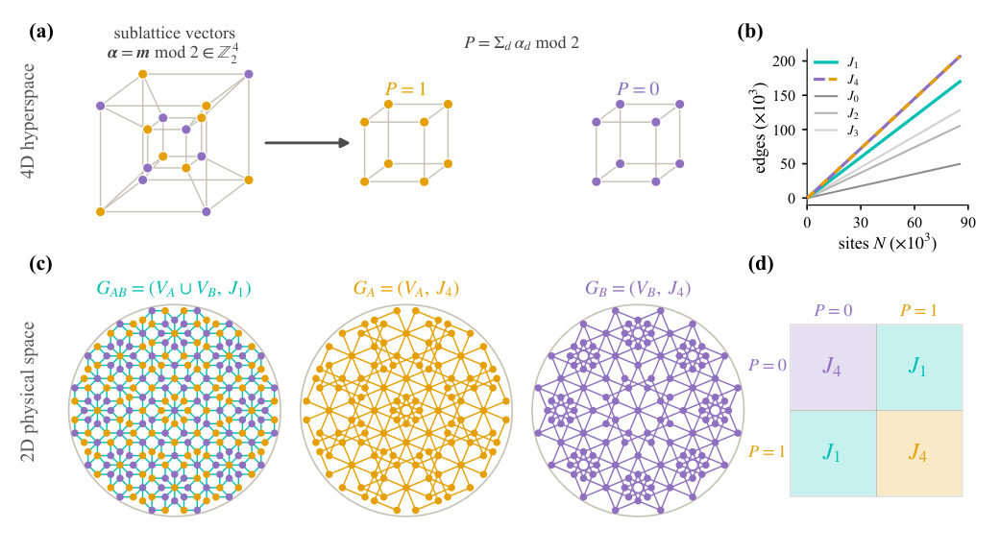
<figcaption class="paper-figure-caption"><b>Fig 1.</b> FIG. 1. (a) Parity decomposition in the four-dimensional hypercubic parent lattice. The parity P splits the 24 sublattice vectors α into two groups of eight, drawn as cubes for VA (P = 1) and VB (P = 0). (b) Number of bonds of each class n versus the number of sites N. (c) Graphs in physical space after cut-and-project: GAB formed by the J1 bonds, and GA, GB formed by the J4 bonds.</figcaption>
</figure>
<figure class="paper-figure-card">
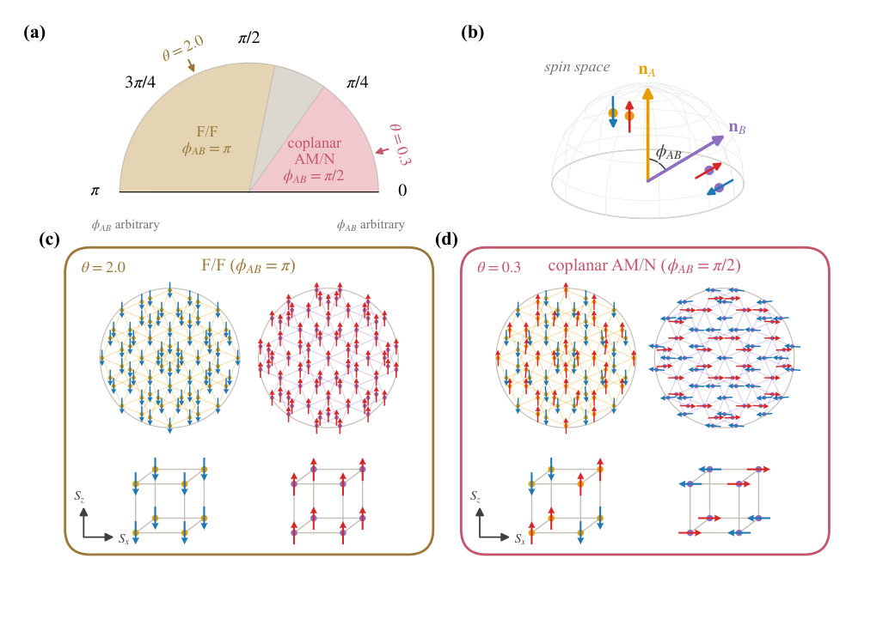
<figcaption class="paper-figure-caption"><b>Fig 2.</b> FIG. 2. (a) Ground-state phase diagram of the J1–J4 model for θ ∈[0, π], with phase boundaries at θ ≈0.95 and 1.37. At θ = 0 and π, GA and GB decouple, having an arbitrary relative angle ϕAB. (b) Relative angle ϕAB between the ordering axes nA of GA and nB of GB in spin space. (c) F/F and (d) coplanar AM/N ground states at the θ marked in (a): relaxed spins on GA and GB, projected onto the Sx–Sz plane (top), and their average over each sublattice α on the cubes VA and VB (bottom).</figcaption>
</figure>
<figure class="paper-figure-card">
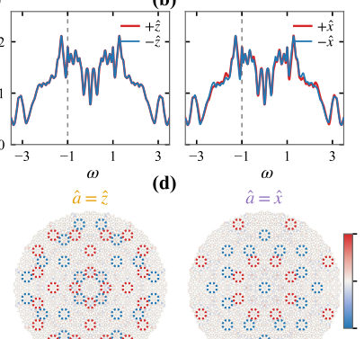
<figcaption class="paper-figure-caption"><b>Fig 3.</b> FIG. 3. Spin-resolved electronic structure of the canted AM/N state at h = 1, θ = 0.3, and η = 0.05. (a) DOS resolved along ˆz, the ordering axis of GA, whose two channels coincide by [C2x ∥C8z]. (b) DOS resolved along ˆx, the order- ing axis of GB, whose two channels split. (c),(d) LDOS spin splitting ρ+ˆa −ρ−ˆa at ω = −1, normalized to its maximum, for (c) ˆa = ˆz and (d) ˆa = ˆx.</figcaption>
</figure>
<figure class="paper-figure-card">

<figcaption class="paper-figure-caption"><b>Fig 4.</b> FIG. 4. Spin-resolved transmission through the canted AM/N state at θ = 0.3, h = 1 and E = −1, plotted radially versus rotation angle ϕ. (a) Device geometry: nonmagnetic square- lattice leads, source S and drain D, coupled by tc to the tiling and rotated jointly by ϕ, with the contact region enlarged in the inset. (b) Transmission T±ˆz resolved along ˆz, the ordering axis of GA, whose two channels are exchanged by [C2x ∥C8z] under ϕ →ϕ+π/4, T+ˆz(ϕ+π/4) = T−ˆz(ϕ). (c) Transmission T±ˆx resolved along ˆx, the ordering axis of GB, whose two channels each preserve C8z.</figcaption>
</figure>
</div>

<p><strong>Summary.</strong> This paper determines the exact altermagnetic ground state of a Heisenberg model on the Ammann-Beenker quasicrystal. The authors find that the magnetic order locks into a coplanar, canted state with specific spin-group symmetry. This magnetic structure is then experimentally verified by calculating spin-resolved electronic transport, which exhibits characteristic g-wave symmetry.</p>
<p><strong>Why it may be interesting.</strong> The work provides a concrete, geometric realization of altermagnetism in a non-periodic system, linking the exact magnetic ground state structure to measurable quantum transport signatures (g-wave symmetry).</p>
<details>
<summary>Detailed structure</summary>
<p><strong>Main problem.</strong> The study aims to identify and characterize the exact altermagnetic ground states of a classical Heisenberg model defined on the geometrically complex Ammann-Beenker quasicrystal tiling.</p>
<p><strong>Main result.</strong> The system exhibits a coplanar altermagnetic order characterized by an orthogonal locking of the two primary ordering axes ($\phi_{AB} = \pi/2$), which is confirmed by spin-resolved transport measurements showing g-wave symmetry.</p>
<p><strong>Method.</strong> The authors combine analytical energy minimization techniques with detailed electronic structure calculations using the Green's function formalism to probe spin-resolved transport.</p>
<p><strong>Model / system.</strong> The system is a classical Heisenberg spin model on the Ammann-Beenker tiling, which is derived from projecting a 4D hypercubic lattice. The model is analyzed by coupling the spins to itinerant electrons via an onsite exchange interaction.</p>
<p><strong>Key observables.</strong> Spin-resolved transmission ($\Delta T^{\hat{a}}$), spin-group symmetry ($[C_{2x} \parallel C_{8z}]$), and the angle ($\phi_{AB}$) between the magnetic ordering axes.</p>
<p><strong>Important parameters / regimes.</strong> The coupling ratio parameterized by $   heta$ ($J_1 = \sin 	heta, J_4 = \cos 	heta$), and the contact rotation angle $\phi$ for transport calculations.</p>
<p><strong>Assumptions / limitations.</strong> The electronic structure analysis relies on coupling the system to semi-infinite leads (Source S and Drain D) and assuming the ground state spin configuration is determined by energy minimization.</p>
<p><strong>Figures summary.</strong> Figures illustrate the AM/N phase structure, the orthogonal locking of ordering axes via second-order canting, and the dependence of spin-resolved transmission ($\Delta T^{\hat{z}}$ and $\Delta T^{\hat{x}}$) on the contact angle $\phi$.</p>
<p><strong>Paper structure.</strong> The paper first establishes the magnetic ground state by analyzing the Hamiltonian's parity structure and finding the minimum energy configuration ($\phi_{AB} = \pi/2$). It then transitions to electronic structure calculations, using the determined spin configuration to calculate spin-resolved transport properties.</p>
</details>
<details>
<summary>Abstract</summary>
<p>We identify exact altermagnetic ground states of a classical Heisenberg model on a quasicrystal. Considering the Ammann--Beenker tiling as an example, we determine the ground states by exploiting the parity structure of its parent four-dimensional hypercubic lattice. The ground state hosts coplanar altermagnetic order characterized by the preserved spin-group symmetry $[C_{2x}\parallel C_{8z}]$. Without translational symmetry, the momentum-space spin splitting that usually identifies altermagnets is not directly accessible. We instead couple the spins to itinerant electrons and show spin-resolved transport with $g$-wave symmetry, confirming the altermagnetic nature in a nonperiodic system. Our results establish a geometric route to altermagnetic order in quasicrystals, connecting exact magnetic ground states to their spin-resolved transport signatures.</p>
</details>
<p><sub><a href="#top">↑ back to top</a></sub></p>

<p><a id="paper-2610.18411"></a></p>
<h3 id="curie-weiss-cell-fluid-model-fitting-to-experimental-critical-point-data"><a href="http://arxiv.org/abs/2610.18411v1">Curie-Weiss cell fluid model: Fitting to experimental critical-point data</a></h3>
<p><strong>Authors:</strong> I. V. Pylyuk, O. A. Dobush, M. P. Kozlovskii, R. V. Romanik, M. A. Shpot<br>
<strong>Type:</strong> theory · <strong>Category:</strong> statistical mechanics · <strong>PDF:</strong> <a href="https://arxiv.org/pdf/2610.18411v1">https://arxiv.org/pdf/2610.18411v1</a><br>
<strong>Analysis basis:</strong> full PDF text, analyzed in chunks
<strong>Topic relevance:</strong> <code>analog quantum simulation</code> <strong>2/5</strong> · <code>Keldysh / 2PI / non-Gaussian methods</code> <strong>1/5</strong></p>
<div class="figure-strip-hint">↔ Scroll figures horizontally</div>
<div class="paper-figures-scroll">
<figure class="paper-figure-card">

<figcaption class="paper-figure-caption"><b>Fig 1.</b> Fig. 1: Phase diagram of the cell fluid model with temperature-dependent attraction. The first-order phase-transition lines separating phases I, II, and III are shown in blue (I–II coexistence), green (II– III coexistence), and violet (I–III coexistence). In the high-temperature region, the blue and green curves terminate at critical points, indicated by circles. The red circle denotes the triple point</figcaption>
</figure>
</div>

<p><strong>Summary.</strong> This paper applies the Curie-Weiss cell fluid model to analyze the critical and triple-point behavior of various real fluids. By fitting the model's microscopic parameters to experimental critical data, the authors demonstrate that the model provides a good description, particularly for large molecules, and can be successfully extended to describe complex phase coexistence regions.</p>
<p><strong>Why it may be interesting.</strong> While focused on classical fluids, the methodology of parameterizing complex many-body interactions (like the Curie-Weiss term) and mapping them onto measurable macroscopic phase transitions is relevant for developing effective Hamiltonians in quantum many-body systems.</p>
<details>
<summary>Detailed structure</summary>
<p><strong>Main problem.</strong> To establish a quantitative link between the microscopic parameters of the Curie-Weiss cell fluid model and the macroscopic critical and triple-point data of real fluids.</p>
<p><strong>Main result.</strong> The model shows the best agreement with experimental data for polyol ester lubricants, suggesting its suitability for soft-matter systems, and can be generalized to describe the triple point region.</p>
<p><strong>Method.</strong> The authors fit the model's microscopic parameters ($J_1, v$) by matching the model's predictions for the critical temperature and density to experimental values.</p>
<p><strong>Model / system.</strong> The study uses the Curie-Weiss cell fluid model, characterized by global attraction ($J_1$) and local repulsion ($J_2$), applied to real fluids like water, $   ext{CO}_2$, and polyol ester lubricants.</p>
<p><strong>Key observables.</strong> Critical temperature ($T_c$), critical density ($
ho_c$), critical pressure ($P_c$), critical compressibility factor ($Z_c$), and the ratio $T_c/T_{tr}$.</p>
<p><strong>Important parameters / regimes.</strong> The ratio of local repulsion to global attraction ($f=J_2/J_1$), and the temperature- and phase-dependent attraction parameters ($\alpha_\pi$).</p>
<p><strong>Assumptions / limitations.</strong> The model relies on a mean-field approximation, and initial parameter fitting is done using only the critical point data, requiring generalization to address the triple point.</p>
<p><strong>Figures summary.</strong> The notes mention figures illustrating the phase diagram with coexistence lines and the comparison of model predictions versus experimental data for critical and triple points.</p>
<p><strong>Paper structure.</strong> The paper first establishes the model parameters using critical point data, noting deviations in $P_c$ and $Z_c$. It then generalizes the model by introducing temperature-dependent attraction to successfully describe the triple point and reproduce the range of $T_c/T_{tr}$ observed in real fluids.</p>
</details>
<details>
<summary>Abstract</summary>
<p>We examine how the Curie--Weiss cell fluid model can be quantitatively related to real fluids by determining its microscopic parameters from experimental critical-point data for water, carbon dioxide, and three polyol ester lubricants (POE5, POE7, and POE9). The microscopic parameters of the model are determined from the experimental values of the critical temperature and critical density: the global attraction coupling constant is fixed by the critical temperature, and the cell volume by the critical density. The critical pressure then follows as an independent model prediction, deviating from experimental values by 10--41$\%$ across the studied substances. Varying the ratio of local repulsion to global attraction $f=J_2/J_1$ over a wide range has only a weak effect on this deviation. For $f\geq1$, the model's critical compressibility factor lays within a narrow range $Z_c\approx0.382-0.386$, remaining close to the mean-field van der Waals value $Z_c=3/8=0.375$ and consistently overestimating experimental values. The best agreement with experiment is obtained for the polyol ester lubricants and improves along the POE5--POE7--POE9 series with increasing molar mass, suggesting that multiple-occupancy cell fluid models are well suited to systems of large molecules, particularly soft-matter systems with bounded interaction potentials. We further show that generalizing the model by introducing a temperature- and phase-dependent effective attraction allows it to describe a triple point and to reproduce the broad range of critical-to-triple temperature ratios $T_c/T_{\mathrm{tr}}$ characteristic of real fluids.</p>
</details>
<p><sub><a href="#top">↑ back to top</a></sub></p>

<p><a id="paper-2610.17464"></a></p>
<h3 id="imaging-the-topological-sign-of-a-dirac-mass-with-spin-polarized-tunneling"><a href="http://arxiv.org/abs/2610.17464v1">Imaging the topological sign of a Dirac mass with spin-polarized tunneling</a></h3>
<p><strong>Authors:</strong> Payman Kazemikhah, Ruolun Zhang, Byunghoon Kim, Xiangyu Luo, Zachary Ducorsky, Yu-Peng Zhu, Md. Shafayat Hossain, M. Zahid Hasan<br>
<strong>Type:</strong> both · <strong>Category:</strong> other · <strong>PDF:</strong> <a href="https://arxiv.org/pdf/2610.17464v1">https://arxiv.org/pdf/2610.17464v1</a><br>
<strong>Analysis basis:</strong> full PDF text, analyzed in chunks
<strong>Topic relevance:</strong> <code>quantum measurements</code> <strong>2/5</strong> · <code>analog quantum simulation</code> <strong>1/5</strong></p>
<div class="figure-strip-hint">↔ Scroll figures horizontally</div>
<div class="paper-figures-scroll">
<figure class="paper-figure-card">
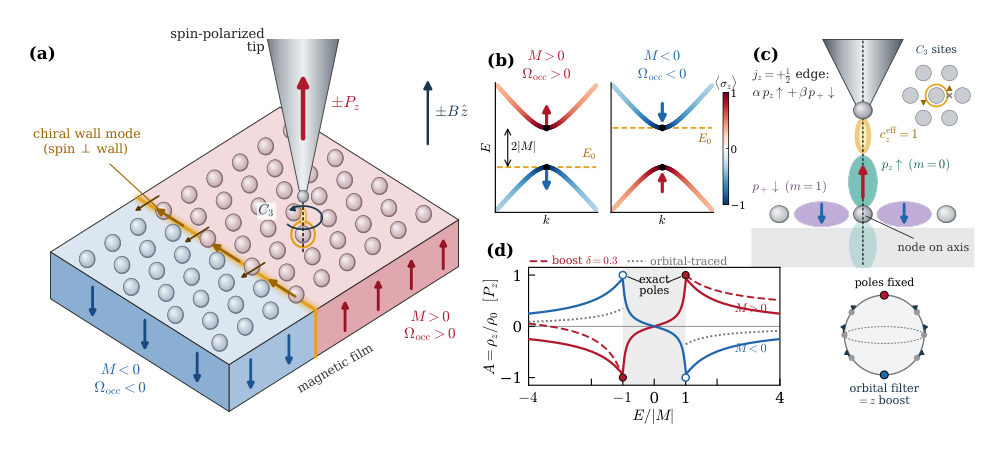
<figcaption class="paper-figure-caption"><b>Fig 1.</b> FIG. 1. Local readout of the Dirac-mass sign. (a) A spin-polarized tip with reversible polarization ±Pz probes a C3 axis of a magnetic topological-insulator surface. Domains with opposite exchange masses M have opposite Berry curvatures, and their boundary hosts a chiral mode with in-plane spin perpendicular to the wall. (b) Massive Dirac spectra for the two domains, colored by ⟨σz⟩. The band-edge spin reverses with M; the dashed line marks the zeroth Landau level, E0 = −M for eB &gt; 0. (c) Rotation-axis selection rule. For the band-edge state αpz↑+βp+↓, the m = 1 component vanishes on the C3 axis, so an axial tip couples to a fully polarized state, ceff z = 1, independent of the orbital...</figcaption>
</figure>
<figure class="paper-figure-card">
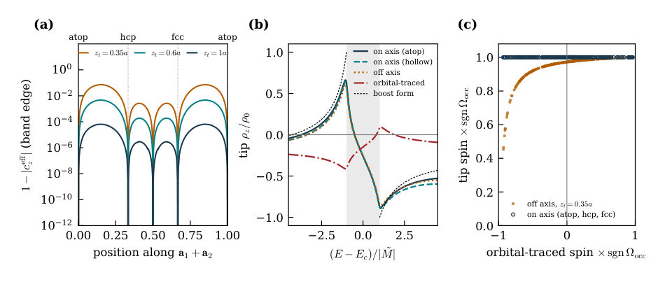
<figcaption class="paper-figure-caption"><b>Fig 2.</b> FIG. 2. On-axis spin equals the Hall sign. Selection rule in a C3v spin–orbital model (p orbitals, spin–orbit and orbital Rashba coupling, exchange along z, SM S6). (a) Deviation 1 −|ceff z | of the tip polarization of the upper band edge along the cell diagonal for three tip heights. It vanishes on the C3 axes. The zero at the bridge site reflects the model’s twofold axis. (b) Tip asymmetry near the gap on and off the axis, and orbital-traced. Dashed, Eq. (5) with δ = −0.23. The orbital-traced polarization has the opposite sign at both edges (+0.16, −0.48). (c) For 250 random parameter sets, the on-axis spin of the upper edge always equals sgn Ωocc. The orbital-traced spin has either sign.</figcaption>
</figure>
<figure class="paper-figure-card">

<figcaption class="paper-figure-caption"><b>Fig 3.</b> FIG. 3. Domain walls as self-calibrating controls. Domain walls in the doubler-free continuum model (M0 = 0.3, wall width 0.9 v/M0, η = 0.1M0). (a) log10 ρ0 with the in-gap Jackiw–Rebbi mode. (b) ρz/ρ0, exactly antisymmetric about the wall. (c) At E = 0 the mode has spin perpendicular to the wall (ρx/ρ0 = −0.82) and is invisible to a z tip. (d) Cuts at E = 1.2M0 for the continuum (±0.73) and lattice F1 (+0.57, −0.77). The asymmetry of F1 comes from its time-reversal-odd regulator.</figcaption>
</figure>
<figure class="paper-figure-card">
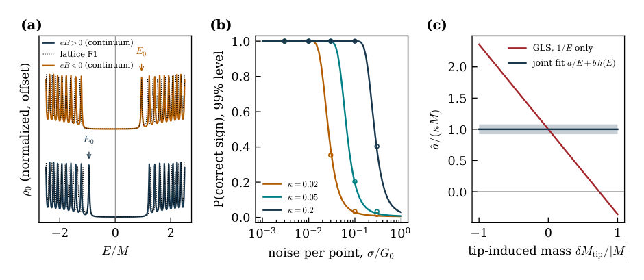
<figcaption class="paper-figure-caption"><b>Fig 4.</b> FIG. 4. Field route, decision statistics, and tip-induced mass. (a) Landau levels for eB &gt; 0 (lower) and eB &lt; 0 (upper) for the continuum with curvature (solid) and lattice F1 (dotted), M = 0.3, 2πϕ = 0.031, with E0 = −sgn(eB)(M −β|eB|). (b) Probability of a correct decision at 99% confidence, Eq. (7) (lines) and Monte Carlo (circles), M = 15 meV. (c) Bias from a tip-induced mass in fits that use one side of the gap, 1/E only versus joint fit. The band marks ±1 standard error at σ = 0.01G0.</figcaption>
</figure>
</div>

<p><strong>Summary.</strong> This paper presents a novel method to locally determine the sign of the Dirac mass in magnetic topological materials using spin-polarized scanning tunneling microscopy. By exploiting crystalline rotation symmetry, the technique allows researchers to map the sign of the Berry curvature in real space, moving beyond merely identifying where a spectral gap exists. This capability is crucial for understanding the full topological character of materials.</p>
<p><strong>Why it may be interesting.</strong> This work provides a concrete, measurable spectroscopic signature ($ ext{sgn}(\Omega_{   ext{occ}})$) that goes beyond simple gap measurements, offering a powerful tool for mapping topological phase transitions in real space, which is highly relevant for understanding topological materials in condensed matter physics.</p>
<details>
<summary>Detailed structure</summary>
<p><strong>Main problem.</strong> The primary goal is to develop a local spectroscopic technique capable of determining the topological sign of a Dirac mass ($M$), which is crucial because current methods only measure the gap magnitude $|M|$.</p>
<p><strong>Main result.</strong> The authors demonstrate that spin-resolved tunneling, particularly when exploiting crystalline rotation symmetry on a $C_3$ axis, can directly and locally measure the sign of the occupied-band Berry curvature, $  ext{sgn}(\Omega_{   ext{occ}})$.</p>
<p><strong>Method.</strong> The method combines theoretical modeling of magnetic topological surfaces with proposed experimental measurements using spin-polarized scanning tunneling microscopy (STM) spectroscopy.</p>
<p><strong>Model / system.</strong> The study models magnetic topological surfaces exhibiting a Dirac cone gapped by an exchange mass $M$. The analysis uses tight-binding models, continuum Hamiltonians, and incorporates effects from spin-polarized tunneling tips and domain wall structures.</p>
<p><strong>Key observables.</strong> Spin asymmetry $A(E)$, the sign of the Berry curvature ($ ext{sgn}(\Omega_{   ext{occ}})$), and the energy/spin characteristics of chiral domain-wall modes.</p>
<p><strong>Important parameters / regimes.</strong> The mass $M$, the tip polarization $P$, the crystalline symmetry axis ($C_3$), and the disorder strength ($\delta M$).</p>
<p><strong>Assumptions / limitations.</strong> The technique relies on the existence of crystalline rotation symmetry ($C_n$ axis) to simplify the spin-orbital entanglement and ensure the band-edge state is fully spin-polarized.</p>
<p><strong>Figures summary.</strong> Figures illustrate the readout mechanism using spin-polarized tips on $C_3$ axes, showing spin reversal with $M$, and confirming the relationship between measured spin asymmetry and the Berry curvature sign. Other figures detail domain wall physics and the robustness of the sign measurement against disorder.</p>
<p><strong>Paper structure.</strong> The paper progresses from establishing the physical necessity of measuring the mass sign to detailing the symmetry-protected measurement protocol using spin-polarized STM, and finally validating the technique by analyzing domain walls and disordered systems.</p>
</details>
<details>
<summary>Abstract</summary>
<p>A Dirac mass is characterized not only by its magnitude but also by its sign, which influences the Berry curvature, Hall response, and the propagation direction of chiral boundary modes. However, local spectroscopy of magnetic topological surfaces has so far accessed only the gap magnitude $|M|$. Here we show how the topological sign of $M$ can be determined locally. We first establish the sign information that spin-resolved tunneling can access and the reference required to obtain an absolute Hall sign. Although spin--orbital entanglement generally obscures the relation between measured spin and Dirac pseudospin, crystalline rotation symmetry alleviates this ambiguity at the band edge. On a $C_3$ axis, an axial tip couples to a fully spin-polarized state whose tunneling asymmetry directly reveals the sign of the occupied-band Berry curvature, independent of orbital composition. We further show that the zeroth Landau level provides an independent mass-sign measurement with an unpolarized tip, while opposite domains and their chiral domain-wall modes provide self-consistency checks. These results pave the way for imaging the locations where the topological character changes within a material, rather than merely identifying where a spectral gap appears.</p>
</details>
<p><sub><a href="#top">↑ back to top</a></sub></p>

<p><a id="paper-2610.17222"></a></p>
<h3 id="pairing-from-repulsive-interactions-in-twisted-wse2-from-functional-renormalization"><a href="http://arxiv.org/abs/2610.17222v1">Pairing from repulsive interactions in twisted WSe2 from functional renormalization</a></h3>
<p><strong>Authors:</strong> Hannes Braun, Dumitru Călugăru, Pietro M. Bonetti, Haoyu Hu, Yan Zhang, Yi Jiang, Quansheng Wu, Kin Fai Mak, Jie Shan, B. Andrei Bernevig, Michael M. Scherer, Laura Classen<br>
<strong>Type:</strong> theory · <strong>Category:</strong> strongly correlated electrons · <strong>PDF:</strong> <a href="https://arxiv.org/pdf/2610.17222v1">https://arxiv.org/pdf/2610.17222v1</a><br>
<strong>Analysis basis:</strong> full PDF text, analyzed in chunks
<strong>Topic relevance:</strong> <code>Keldysh / 2PI / non-Gaussian methods</code> <strong>2/5</strong> · <code>analog quantum simulation</code> <strong>1/5</strong></p>
<div class="figure-strip-hint">↔ Scroll figures horizontally</div>
<div class="paper-figures-scroll">
<figure class="paper-figure-card">

<figcaption class="paper-figure-caption"><b>Fig 1.</b> FIG. 1. (a) Band dispersion of the three topmost moiré bands in valley K at two values of the displacement field D. Bands in valley K′ are related by time reversal. (b) Density of states (DOS) of topmost band Eσ 1 at filling ν = −1 as a function of D. (c) Range of projected Coulomb and Hubbard interactions: maximal magnitude of the Fourier-transformed bare interaction V X,ii σσ′ in particle-hole (X=PH) and particle- particle (X=PP) channels at distance Ri (Eq. (S7.21) in [76]) for D = 0 meV and 10/ϵ = 1.6 (Coulomb) or α = 1.67 (Hub- bard). The vectors Ri are defined on the triangular moiré lattice numbered along hexagonal shells with increasing dis- tance as depicted in the inset, and...</figcaption>
</figure>
<figure class="paper-figure-card">

<figcaption class="paper-figure-caption"><b>Fig 2.</b> FIG. 2. (a) FRG phase diagram of interaction strength 10/ϵ and displacement field D. IVC-SDW instabilities are rep- resented by the colors shown in the moiré BZ inset, which represent the IVC-SDW wave vector. Superconducting in- stabilities are represented by the blue tones. The opacity of the coloring represents the temperature of the emerging instability Tc. (b) Line-cut through the phase diagram at 10/ϵ = 1.36 and comparable α = 0.5 for the three differ- ent initial interactions, i.e., Coulomb/Hubbard/constant as described in the main text. Circles represent IVC-SDW in- stabilities, triangles superconducting instabilities. Notably, for the projected Coulomb interaction, the superconducting...</figcaption>
</figure>
<figure class="paper-figure-card">

<figcaption class="paper-figure-caption"><b>Fig 3.</b> FIG. 3. (a) Weight s of the pairing eigenfunction ∆(k) = s · d(k)t0+(1−s)·p(k)tz with Pauli matrices in spin/valley space ti = iσiσy for 10/ϵ = 0.8 extracted from FRG and from an IVC-spin-fluctuation approach which projects the RPA vertex into the pairing channel ˆP[V RPA]. Inset: d(k) and p(k) in the Brillouin zone. (b) The RPA-dressed interactions in the IVC- SDW channel for Coulomb/Hubbard/constant interaction as a function of D. The DOS is shown in gray for reference.</figcaption>
</figure>
</div>

<p><strong>Summary.</strong> This work analyzes superconductivity in twisted WSe2, showing that pairing arises from inter-valley coherent spin fluctuations acting as the pairing glue. Using FRG and RPA, the authors demonstrate that the superconducting state is a mixed d-wave/p-wave pairing, and their continuum model successfully predicts this superconductivity persists even at zero displacement field, aligning with experimental findings.</p>
<p><strong>Why it may be interesting.</strong> The detailed theoretical mapping of pairing mechanisms in 2D van der Waals heterostructures using FRG is highly relevant for understanding emergent superconductivity in correlated quantum materials, bridging theory to experimental measurements.</p>
<details>
<summary>Detailed structure</summary>
<p><strong>Main problem.</strong> The study investigates the superconducting instability and pairing mechanism in twisted bilayer WSe2, particularly how superconductivity emerges from repulsive interactions.</p>
<p><strong>Main result.</strong> The pairing instability is driven by inter-valley coherent spin fluctuations, leading to a mixed d-wave singlet and p-wave triplet superconducting state. The continuum model successfully predicts superconductivity down to zero displacement field, matching experiments.</p>
<p><strong>Method.</strong> The authors employ advanced many-body techniques, including Functional Renormalization Group (FRG), Random Phase Approximation (RPA), and Hartree-Fock calculations, comparing results across different theoretical models.</p>
<p><strong>Model / system.</strong> The system is twisted bilayer WSe2 (tWSe2) at hole filling $\nu = -1$. Calculations utilize continuum models derived from first principles, comparing them to realistic three-orbital Wannier models with Hubbard and Coulomb interactions.</p>
<p><strong>Key observables.</strong> Superconducting critical temperature ($T_c$), pairing symmetry (mixed d-wave/p-wave), and the presence/strength of inter-valley-coherent spin-density-wave (IVC-SDW) order.</p>
<p><strong>Important parameters / regimes.</strong> Hole filling $\nu = -1$, twist angle $\theta = 3.65^\circ$, displacement field ($D$), and interaction strength ($10/\epsilon$ or $\alpha$).</p>
<p><strong>Assumptions / limitations.</strong> Approximations include the Hubbard approximation (neglecting momentum/orbital dependence) and the assumption that RPA fluctuations capture the main pairing glue contribution.</p>
<p><strong>Figures summary.</strong> Figures illustrate FRG phase diagrams showing the competition between IVC-SDW and superconducting regimes, and display the structure of the leading pairing eigenfunction, confirming its d-wave/p-wave mixed character.</p>
<p><strong>Paper structure.</strong> The paper systematically compares results from multiple theoretical frameworks (HF, RPA, FRG) applied to the tWSe2 system. It first establishes the existence of competing ordered states (SDW) and then pinpoints the pairing glue by comparing FRG results with RPA projections, culminating in the continuum model's agreement with experimental observations.</p>
</details>
<details>
<summary>Abstract</summary>
<p>Motivated by the observation of superconductivity in twisted bilayer WSe$_2$ over an extended range of displacement fields, reaching from the correlated insulator down to zero field, we analyze the correlated electron phases of this system at hole filling $ν= -1$ and twist angle $3.65^\circ$ using Hartree--Fock, random phase approximation, and functional renormalization group calculations. We derive a continuum model with gate-screened Coulomb interaction from first principles and compare its instabilities to those of a realistic three-orbital Wannier model with a Hubbard interaction and an artificial single-orbital Hubbard model. In both cases, we find a superconducting instability of mixed $d$-wave singlet and $p$-wave triplet character, arising adjacent to inter-valley-coherent spin-density-wave order in the phase diagram spanned by displacement field and interaction strength. Our additional analysis of the pairing mechanism points to inter-valley coherent spin fluctuations as the pairing glue. The extent of the pairing regime and the associated critical temperatures depend on the model input, and we trace differences to the interaction range entering the projected interaction. Within the continuum model, the gate-screened Coulomb interaction yields pairing down to zero displacement field, bringing theory into agreement with experiment.</p>
</details>
<p><sub><a href="#top">↑ back to top</a></sub></p>

<p><a id="paper-2610.17225"></a></p>
<h3 id="quantum-reference-frames-in-terms-of-tetrads"><a href="http://arxiv.org/abs/2610.17225v1">Quantum Reference Frames in terms of Tetrads</a></h3>
<p><strong>Authors:</strong> Jeremy Butterfield, Daniel A. Turolla Vanzella<br>
<strong>Type:</strong> theory · <strong>Category:</strong> other · <strong>PDF:</strong> <a href="https://arxiv.org/pdf/2610.17225v1">https://arxiv.org/pdf/2610.17225v1</a><br>
<strong>Analysis basis:</strong> full PDF text, analyzed in chunks
<strong>Topic relevance:</strong> <code>quantum measurements</code> <strong>2/5</strong> · <code>Keldysh / 2PI / non-Gaussian methods</code> <strong>1/5</strong></p>
<div class="figure-strip-hint">↔ Scroll figures horizontally</div>
<div class="paper-figures-scroll">
<figure class="paper-figure-card">
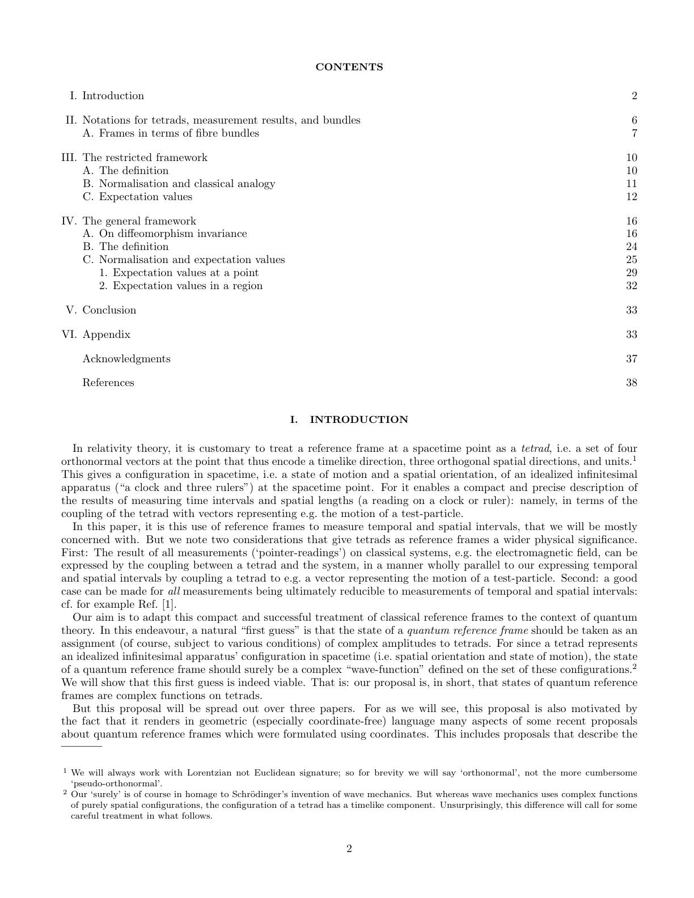
<figcaption class="paper-figure-caption"><b>Fig 1.</b> Low-resolution page preview, page 2</figcaption>
</figure>
<figure class="paper-figure-card">
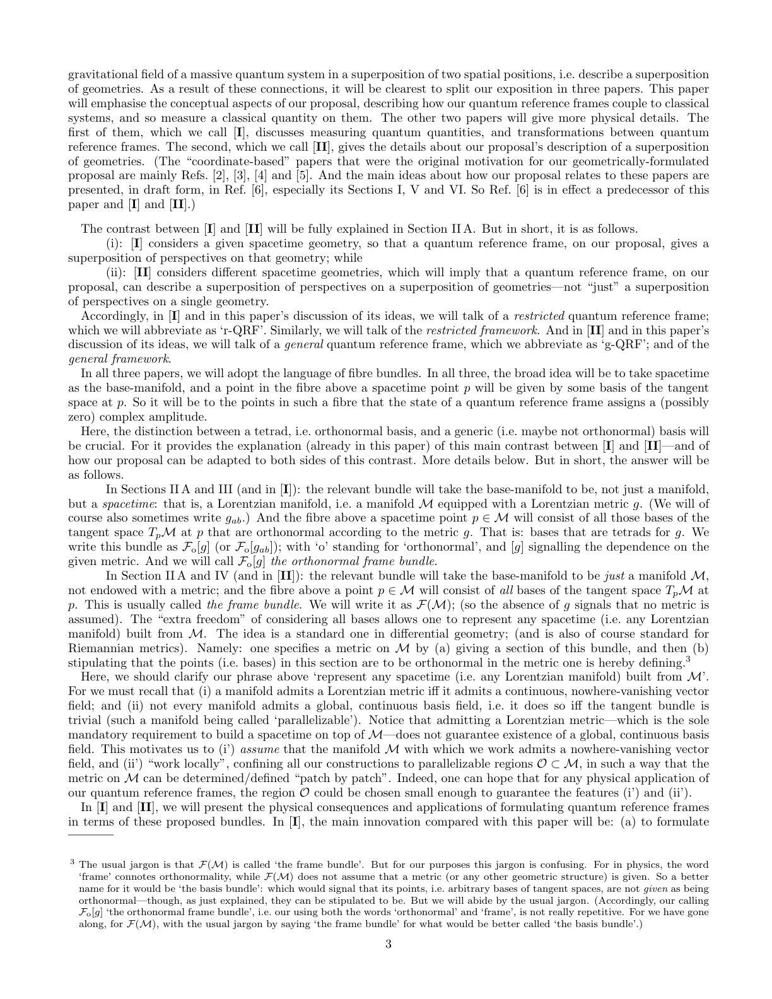
<figcaption class="paper-figure-caption"><b>Fig 2.</b> Low-resolution page preview, page 3</figcaption>
</figure>
<figure class="paper-figure-card">

<figcaption class="paper-figure-caption"><b>Fig 3.</b> Low-resolution page preview, page 4</figcaption>
</figure>
<figure class="paper-figure-card">
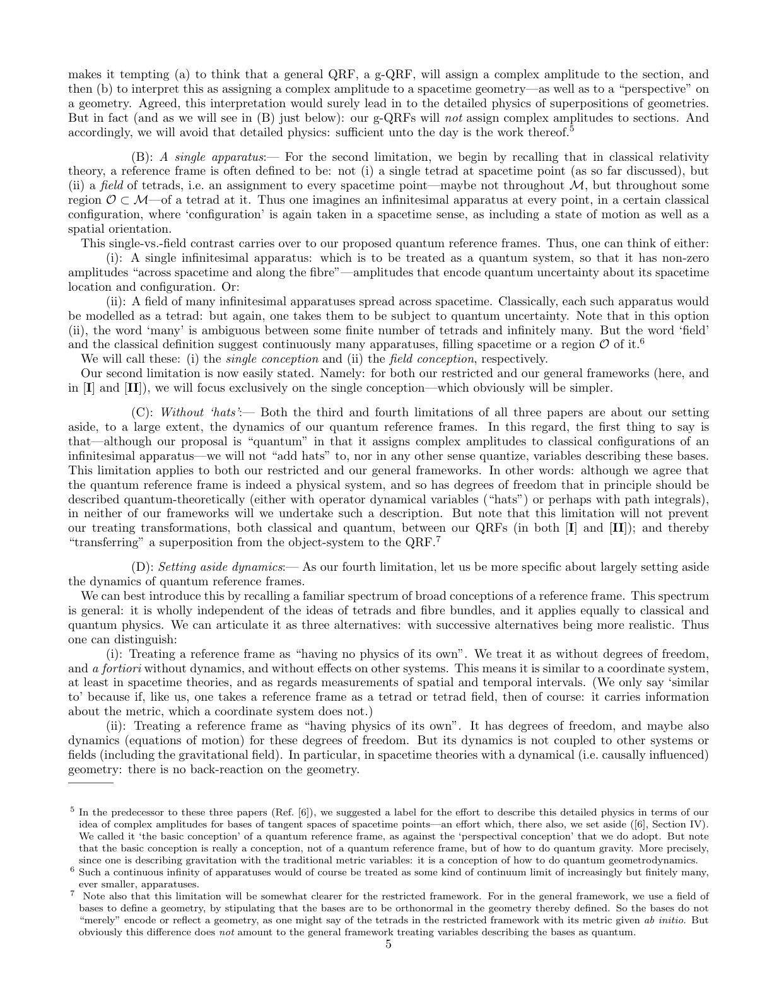
<figcaption class="paper-figure-caption"><b>Fig 4.</b> Low-resolution page preview, page 5</figcaption>
</figure>
<figure class="paper-figure-card">

<figcaption class="paper-figure-caption"><b>Fig 5.</b> Low-resolution page preview, page 6</figcaption>
</figure>
</div>

<p><strong>Summary.</strong> This paper develops a rigorous mathematical framework for Quantum Reference Frames (QRFs) by treating the reference frame itself as a quantum object defined over the space of tetrads. It uses fibre bundle theory to distinguish between scenarios where the QRF superposes perspectives on one geometry versus superposing over multiple possible geometries. The work culminates in deriving a unique, invariant volume element on the general frame bundle.</p>
<p><strong>Why it may be interesting.</strong> While highly mathematical, the concept of a QRF is foundational for quantum gravity and quantum field theory in curved spacetime, making it relevant to theoretical physics concerned with spacetime structure.</p>
<details>
<summary>Detailed structure</summary>
<p><strong>Main problem.</strong> The paper adapts the relativistic concept of a reference frame as a tetrad to the quantum domain, formalizing the state of a Quantum Reference Frame (QRF). It aims to distinguish between superpositions of perspectives on a single geometry versus superpositions of geometries themselves.</p>
<p><strong>Main result.</strong> The formalism is constructed using the language of fibre bundles, distinguishing between the orthonormal frame bundle (for fixed geometry) and the general frame bundle (for variable geometry). The construction yields a unique, invariant volume element on the general frame bundle.</p>
<p><strong>Method.</strong> The authors use differential geometry, specifically analyzing the structure and invariance of volume elements on the frame bundle $F(M)$ by stipulating that the basis field acts as a tetrad field.</p>
<p><strong>Model / system.</strong> The system is the Quantum Reference Frame (QRF), whose state is proposed to be a complex amplitude assignment over the space of tetrads. The mathematical framework is built upon fibre bundles over spacetime, specifically the frame bundle $F(M)$.</p>
<p><strong>Key observables.</strong> The state of the QRF, which is a complex function on the relevant set of tetrads, and the expectation values of observables derived from coupling the QRF to measured systems.</p>
<p><strong>Important parameters / regimes.</strong> The choice between the orthonormal frame bundle (restricted QRF) and the general frame bundle (general QRF) dictates the physical interpretation of the superposition.</p>
<p><strong>Assumptions / limitations.</strong> The core assumptions involve treating the reference frame via tetrads, and mathematically, the determination of the invariant volume element relies on stipulating orthonormality (a tetrad condition) to fix the constant in the Haar measure.</p>
<p><strong>Paper structure.</strong> The paper is structured conceptually, outlining the proposal's scope by contrasting the restricted (single geometry) and general (superposition of geometries) QRFs. It then delves into the mathematical details of constructing the invariant volume element on the general frame bundle $F(M)$.</p>
</details>
<details>
<summary>Abstract</summary>
<p>We adapt to the context of quantum theory the treatment, familiar in relativity theory, of a reference frame as a tetrad. Since a tetrad is a set of four orthonormal vectors at a spacetime point, it encodes a timelike direction, three orthogonal spatial directions, and units; and so it gives a configuration in spacetime (a spatial orientation and state of motion) of an idealized infinitesimal apparatus (<code>rulers and a clock"). So a natural</code>first guess" is that the state of a quantum reference frame should be an assignment of complex amplitudes to a set of tetrads. We develop this idea, in terms of bundles over spacetime of bases of the tangent spaces.   This paper is a companion to two other papers. It emphasises the main conceptual aspects of our proposal, while the other two papers give physical details. It also explains the main contrast between those two papers. Namely: (i) the first considers a single spacetime geometry, so that a quantum reference frame, on our proposal, gives a superposition of perspectives on that geometry; while (ii) the second considers the spacetime manifold with no geometry given a priori, which will imply that a quantum reference frame, on our proposal, can describe a superposition of perspectives on a superposition of geometries---not ``just" a superposition of perspectives on a single geometry. The main mathematical idea for representing this contrast will be choosing between (i) the orthonormal frame bundle, for a given spacetime geometry; (ii) the frame bundle in the usual sense of containing all bases of all spacetime points' tangent spaces.</p>
</details>
<p><sub><a href="#top">↑ back to top</a></sub></p>

<p><a id="paper-2610.17648"></a></p>
<h3 id="nearly-optimal-quantum-sample-complexity-of-learning-fourier-sparse-boolean-functions"><a href="http://arxiv.org/abs/2610.17648v1">Nearly Optimal Quantum Sample Complexity of Learning Fourier-Sparse Boolean Functions</a></h3>
<p><strong>Authors:</strong> Zekun Ye<br>
<strong>Type:</strong> theory · <strong>Category:</strong> quantum information and computing · <strong>PDF:</strong> <a href="https://arxiv.org/pdf/2610.17648v1">https://arxiv.org/pdf/2610.17648v1</a><br>
<strong>Analysis basis:</strong> full PDF text, analyzed in chunks
<strong>Topic relevance:</strong> <code>quantum measurements</code> <strong>2/5</strong></p>
<div class="figure-strip-hint">↔ Scroll figures horizontally</div>
<div class="paper-figures-scroll">
<figure class="paper-figure-card">

<figcaption class="paper-figure-caption"><b>Fig 1.</b> Low-resolution page preview, page 2</figcaption>
</figure>
<figure class="paper-figure-card">
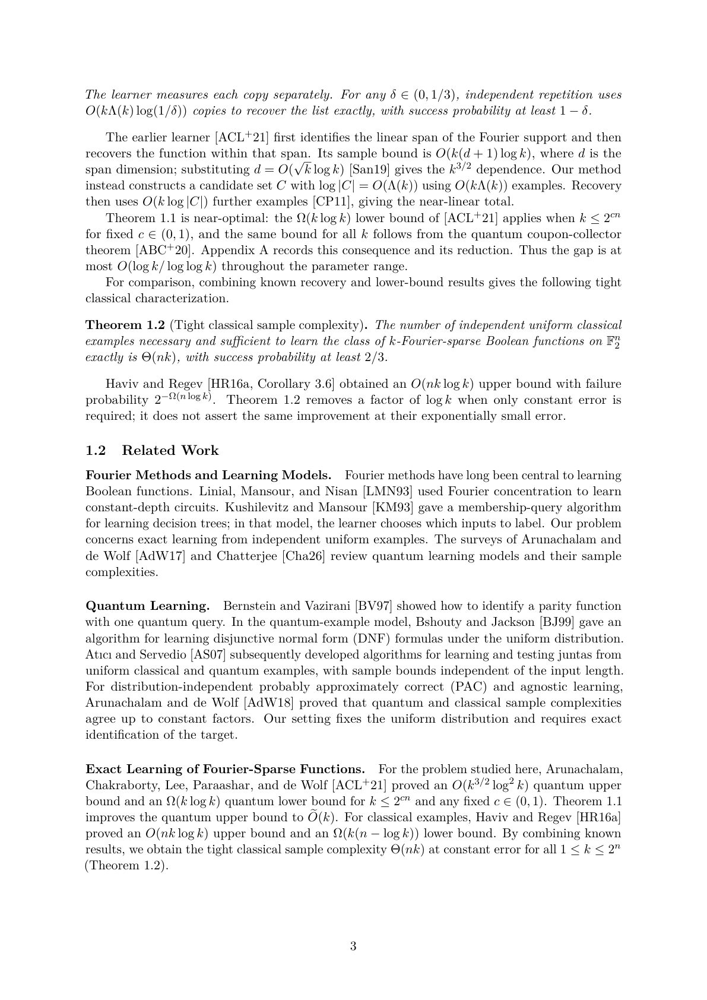
<figcaption class="paper-figure-caption"><b>Fig 2.</b> Low-resolution page preview, page 3</figcaption>
</figure>
<figure class="paper-figure-card">

<figcaption class="paper-figure-caption"><b>Fig 3.</b> Low-resolution page preview, page 4</figcaption>
</figure>
<figure class="paper-figure-card">

<figcaption class="paper-figure-caption"><b>Fig 4.</b> Low-resolution page preview, page 5</figcaption>
</figure>
<figure class="paper-figure-card">

<figcaption class="paper-figure-caption"><b>Fig 5.</b> Low-resolution page preview, page 6</figcaption>
</figure>
</div>

<p><strong>Summary.</strong> This theoretical paper analyzes the quantum sample complexity required to learn Boolean functions whose Fourier spectrum is sparse. It achieves a near-optimal quantum sample bound by combining techniques like multilinear majority polynomials for support detection and established sparse recovery theorems for coefficient estimation. This advances the understanding of quantum data requirements for learning structured functions.</p>
<p><strong>Why it may be interesting.</strong> The techniques developed for robust quantum learning and sparse recovery are fundamental tools applicable to quantum machine learning models or characterizing quantum states.</p>
<details>
<summary>Detailed structure</summary>
<p><strong>Main problem.</strong> The paper determines the minimum number of uniform quantum examples required to exactly learn a Boolean function that is sparse in its Fourier representation.</p>
<p><strong>Main result.</strong> It establishes a near-optimal quantum sample complexity of O(k * Lambda(k)) for learning k-Fourier-sparse functions, significantly improving previous bounds.</p>
<p><strong>Method.</strong> The approach involves constructing a candidate set containing the true Fourier support using multilinear majority polynomials and then applying sparse recovery theorems.</p>
<p><strong>Model / system.</strong> The model involves Boolean functions f: {0, 1}^n -&gt; {-1, 1} sampled via quantum states, analyzed using Fourier analysis techniques.</p>
<p><strong>Key observables.</strong> The primary observable is the sample complexity (number of quantum examples) needed for exact learning.</p>
<p><strong>Important parameters / regimes.</strong> Key parameters include the sparsity bound k, the input dimension n, and the desired failure probability delta.</p>
<p><strong>Assumptions / limitations.</strong> The analysis assumes the ability to perform separate measurements on individual examples and relies on established results like the Candès–Plan recovery theorem.</p>
<p><strong>Paper structure.</strong> The paper is structured around two main parts: first, constructing a candidate set containing the true Fourier support using random approximations; second, using this set to exactly recover the unknown sparse Fourier coefficients.</p>
</details>
<details>
<summary>Abstract</summary>
<p>We study the number of uniform quantum examples needed to exactly learn a Boolean function with at most $k$ nonzero Fourier coefficients. We give a learner with near-optimal $\widetilde{O}(k)$ sample complexity independent of the input length $n$. The learner uses only separate measurements of individual examples. This improves the previous $O(k^{3/2}\log^2 k)$ upper bound (Arunachalam, Chakraborty, Lee, Paraashar, and de Wolf, 2021). The main ingredient is a candidate set formed by symmetric differences of subsets from independent groups of Fourier samples. A multilinear majority polynomial combines unbiased random approximations into an accurate witness whose Fourier support lies in this set. Granularity then forces the set to contain the entire Fourier support, including subsets never directly sampled. For comparison, we derive the tight classical sample complexity $Θ(nk)$ by combining known sparse-recovery and lower-bound results.</p>
</details>
<p><sub><a href="#top">↑ back to top</a></sub></p>

<p><a id="paper-2610.18553"></a></p>
<h3 id="on-the-increase-of-boltzmann-entropy-in-closed-macroscopic-quantum-systems"><a href="http://arxiv.org/abs/2610.18553v1">On the Increase of Boltzmann Entropy in Closed Macroscopic Quantum Systems</a></h3>
<p><strong>Authors:</strong> Cedric Igelspacher, Roderich Tumulka<br>
<strong>Type:</strong> theory · <strong>Category:</strong> statistical mechanics · <strong>PDF:</strong> <a href="https://arxiv.org/pdf/2610.18553v1">https://arxiv.org/pdf/2610.18553v1</a><br>
<strong>Analysis basis:</strong> full PDF text, analyzed in chunks
<strong>Topic relevance:</strong> <code>quantum measurements</code> <strong>2/5</strong></p>
<div class="figure-strip-hint">↔ Scroll figures horizontally</div>
<div class="paper-figures-scroll">
<figure class="paper-figure-card">

<figcaption class="paper-figure-caption"><b>Fig 1.</b> Figure 1: Histograms of pν(t) = ∥Pνψt∥2 at t = 0, 2, 12, 48 in arbitrary units, obtained through numerical simulation (courtesy of Cornelia Vogel) for a decomposition H = Hmc into macro spaces H1 ⊕H2 ⊕H3 ⊕H4 with dimensions d1 = 2, d2 = 20, d3 = 200, d4 = 2000, a typical ψ0 ∈S(H2), and a Hamiltonian that is a random band matrix. One can see that the family of histograms is approximately right-moving. The same data were displayed in [17, Fig. 1] in a different way.</figcaption>
</figure>
<figure class="paper-figure-card">

<figcaption class="paper-figure-caption"><b>Fig 2.</b> Figure 2: Numerical evidence suggesting that (33) holds for (32) for any α ≥1: The plot shows, for ρ given by (32) with C = 1 = Emax and several choices of α, |ˆρ(t)|2 as a function of t on a logarithmic scale; it is visible that each of the func- tions decreases monotonically. For other values of C &gt; 0 and Emax &gt; 0, the same monotonicity follows via scaling proper- ties.</figcaption>
</figure>
<figure class="paper-figure-card">

<figcaption class="paper-figure-caption"><b>Fig 3.</b> Figure 3: The plot shows the function φ2 1(t) = (J1(2t)/t)2. It is predominantly decreasing, but has oscillations of small amplitude.</figcaption>
</figure>
<figure class="paper-figure-card">
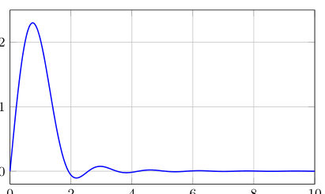
<figcaption class="paper-figure-caption"><b>Fig 4.</b> Figure 4: The plot shows the function φ1(t)φ2(t) = J1(2t)J2(2t)/t2, which is the time-dependent factor in (37).</figcaption>
</figure>
</div>

<p><strong>Summary.</strong> This paper investigates the second law of thermodynamics for closed quantum systems by defining and analyzing the quantum Boltzmann entropy. It develops formalisms—including weak and strong second laws—and tests them on various model Hamiltonians. The results confirm that entropy tends to increase, suggesting that macroscopic irreversibility is a robust feature of quantum dynamics.</p>
<p><strong>Why it may be interesting.</strong> This work directly tackles the quantum foundations of thermodynamics, providing rigorous theoretical tools to understand how macroscopic irreversibility emerges from unitary quantum evolution, which is central to open quantum systems theory.</p>
<details>
<summary>Detailed structure</summary>
<p><strong>Main problem.</strong> The paper addresses the formulation and confirmation of precise versions of the second law of thermodynamics for closed macroscopic quantum systems.</p>
<p><strong>Main result.</strong> The analysis suggests that the weak and strong second laws hold for several model systems, with probability currents showing a tendency to flow from smaller to larger dimension macro spaces as time progresses.</p>
<p><strong>Method.</strong> The methodology involves analyzing the time evolution of the probability distribution across macrostate subspaces using concepts like probability currents and deriving approximate master equations.</p>
<p><strong>Model / system.</strong> The system is a closed macroscopic quantum system evolving unitarily in a finite-dimensional Hilbert space, decomposed into orthogonal macrostate subspaces. Models include random block-band Hamiltonians and those based on Gaussian Unitary Ensembles (GUE).</p>
<p><strong>Key observables.</strong> Quantum Boltzmann Entropy ($S_{qB}$), probability distribution weights ($p_
u(t)$), and probability currents ($\delta_\ell(t)$ and $\delta_r(t)$).</p>
<p><strong>Important parameters / regimes.</strong> The dimension of the Hilbert space ($D$), the ratio of dimensions of macrospaces ($d_
u/D$), and the time scale ($t     o \infty$).</p>
<p><strong>Assumptions / limitations.</strong> The analysis relies on the assumption of a macrostate decomposition, the use of approximations (like the Markovian approximation), and taking limits ($D 	o \infty$ or $t 	o \infty$).</p>
<p><strong>Figures summary.</strong> Figures illustrate the time evolution of probability flow functions, such as $\varphi_2^1(t) = (J_1(2t)/t)^2$, showing a predominantly decreasing trend, and comparing positive versus negative contributions to probability flow.</p>
<p><strong>Paper structure.</strong> The paper first defines the quantum Boltzmann entropy and the two proposed second laws. It then analyzes the evolution of probability distributions using continuity equations and current definitions. Finally, it applies these concepts to specific model Hamiltonians to confirm the laws.</p>
</details>
<details>
<summary>Abstract</summary>
<p>We consider a closed macroscopic quantum system in a pure state $ψ$ evolving unitarily with Hamiltonian $H$ in a finite-dimensional Hilbert space $\mathscr{H}$. Following von Neumann, we assume a decomposition of $\mathscr{H}$ into mutually orthogonal subspaces $\mathscr{H}_ν$, where each $ν$ represents a macro state, and $\mathscr{H}_ν$ contains the pure states compatible with $ν$. We define the quantum Boltzmann entropy for a macro state $ν$ as $S_\mathrm{qB}(ν) = k_{\mathrm{B}} \log \dim \mathscr{H}_ν$, where $k_\mathrm{B}$ is the Boltzmann constant. Goldstein et al. [http://arxiv.org/abs/1903.11870] have suggested, as a version of the second law of thermodynamics, that $S_\mathrm{qB}$ predominantly increases with time for realistic macroscopic systems. Here, we discuss precise versions of this statement and confirm them for several simple models of $H$ and $\mathscr{H}_ν$.</p>
</details>
<p><sub><a href="#top">↑ back to top</a></sub></p>

<p><a id="paper-2610.17708"></a></p>
<h3 id="qedia-quantum-program-verification-in-lean"><a href="http://arxiv.org/abs/2610.17708v1">QEDIA: Quantum Program Verification in Lean</a></h3>
<p><strong>Authors:</strong> Yuanjie, Ren, Zhicheng Zhang, Junyi Liu, Jinzheng Li, Yidi Qi, Mingsheng Ying<br>
<strong>Type:</strong> theory · <strong>Category:</strong> quantum information and computing · <strong>PDF:</strong> <a href="https://arxiv.org/pdf/2610.17708v1">https://arxiv.org/pdf/2610.17708v1</a><br>
<strong>Analysis basis:</strong> full PDF text, analyzed in chunks
<strong>Topic relevance:</strong> <code>quantum measurements</code> <strong>2/5</strong></p>
<div class="figure-strip-hint">↔ Scroll figures horizontally</div>
<div class="paper-figures-scroll">
<figure class="paper-figure-card">
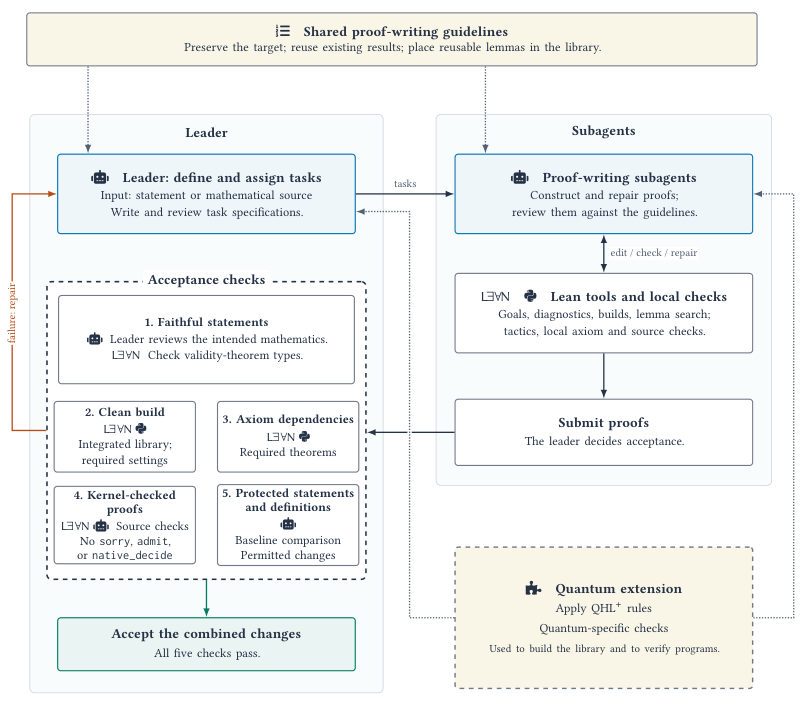
<figcaption class="paper-figure-caption"><b>Fig 1.</b> Fig. 8. The workflow of the core agent with the quantum extension. Icons show whether Lean, Python scripts, or LLM review performs each acceptance check of Section 5.1. Dotted arrows show where the agents use the guidelines and the quantum extension.</figcaption>
</figure>
</div>

<p><strong>Summary.</strong> This paper introduces QEDIA, a novel framework in Lean 4 designed to formally verify quantum programs that mix classical control flow with quantum operations. It achieves this by formalizing an extended Quantum Hoare Logic (QHL+) that consistently handles the classical-quantum interplay. This advancement provides a powerful, automated tool for ensuring the correctness of complex quantum algorithms.</p>
<p><strong>Why it may be interesting.</strong> This work provides a rigorous, machine-checkable methodology for verifying complex quantum algorithms, which is crucial for building reliable quantum hardware and software stacks.</p>
<details>
<summary>Detailed structure</summary>
<p><strong>Main problem.</strong> The core problem is the formal verification of quantum programs that involve complex interleaving between classical control flow and quantum computation.</p>
<p><strong>Main result.</strong> The authors present QEDIA, a novel framework built in Lean 4 that formalizes and proves the soundness of an extended Quantum Hoare Logic (QHL+) capable of handling this classical-quantum interplay.</p>
<p><strong>Method.</strong> The method involves developing a formal proof assistant library based on QHL+ and utilizing an LLM-based prover agent to automate the construction of the formal proofs for various quantum circuits.</p>
<p><strong>Model / system.</strong> The system models general quantum programs, including circuits for the Quantum Fourier Transform, Phase Estimation, and Hamiltonian simulation, where classical variables dictate gate execution and measurement outcomes influence subsequent classical steps.</p>
<p><strong>Key observables.</strong> Correctness proofs for quantum algorithms, including fidelity guarantees for Hamiltonian simulation and state mappings for QFT.</p>
<p><strong>Important parameters / regimes.</strong> The framework handles parameters related to circuit depth, error bounds ($\epsilon$), and the structure of classical control flow (e.g., loop invariants).</p>
<p><strong>Assumptions / limitations.</strong> The primary assumption is that the classical-quantum interplay can be consistently mechanized across the mathematical, syntactic, and semantic levels of the program logic.</p>
<p><strong>Figures summary.</strong> Figures illustrate the classical-quantum interplay in examples like Repeat-Until-Success circuits, QFT structures, and Trotter simulation circuits.</p>
<p><strong>Paper structure.</strong> The paper introduces QEDIA, formalizes QHL+ for classical-quantum interaction, and then demonstrates its application by verifying fundamental circuits such as QFT, Phase Estimation, and Hamiltonian simulation.</p>
</details>
<details>
<summary>Abstract</summary>
<p>Practical quantum programs interleave quantum and classical computation: classical data shape the quantum operations that are performed, and measurement outcomes shape the classical computation that follows. Formal verification of such programs in a proof assistant requires mechanizing a program logic that handles this interplay consistently at every level, from the mathematics of quantum mechanics, through program syntax and semantics, to specifications and proof rules. Such mechanizations, along with the program proofs built on them, typically require substantial manual effort.   We present QEDIA, a framework for verifying quantum programs with classical variables in Lean 4. At its foundation is an open library that formalizes the quantum Hoare logic QHL+ across all these levels and proves the logic sound for both partial and total correctness. We construct the library and the program proofs, under human supervision, using an LLM-based prover agent, whose general-purpose core we extend for quantum program verification. We illustrate QEDIA with verified programs including the quantum Fourier transform, phase estimation, repeat-until-success circuits, and Hamiltonian simulation.</p>
</details>
<p><sub><a href="#top">↑ back to top</a></sub></p>

<p><a id="paper-2610.17722"></a></p>
<h3 id="representation-geometry-and-inductive-biases-in-quantum-classifiers-across-classical-visual-benchmarks"><a href="http://arxiv.org/abs/2610.17722v1">Representation Geometry and Inductive Biases in Quantum Classifiers across Classical Visual Benchmarks</a></h3>
<p><strong>Authors:</strong> Yu Yamaoka, Weng Ian Chan, Kosuke Mitarai<br>
<strong>Type:</strong> both · <strong>Category:</strong> disordered systems and neural networks · <strong>PDF:</strong> <a href="https://arxiv.org/pdf/2610.17722v1">https://arxiv.org/pdf/2610.17722v1</a><br>
<strong>Analysis basis:</strong> full PDF text, analyzed in chunks
<strong>Topic relevance:</strong> <code>quantum measurements</code> <strong>2/5</strong></p>
<div class="figure-strip-hint">↔ Scroll figures horizontally</div>
<div class="paper-figures-scroll">
<figure class="paper-figure-card">

<figcaption class="paper-figure-caption"><b>Fig 1.</b> Fig. 1 Quantum classification pipeline using classical features. Uent is a fixed entangling unitary applied across the qubits. Encoding and learning</figcaption>
</figure>
<figure class="paper-figure-card">

<figcaption class="paper-figure-caption"><b>Fig 2.</b> Fig. 2 Mean test accuracy with 95% confidence interval as error bars across different dataset sizes (higher is better).</figcaption>
</figure>
<figure class="paper-figure-card">
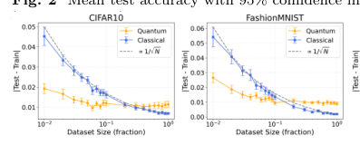
<figcaption class="paper-figure-caption"><b>Fig 3.</b> Fig. 3 Mean generalization with 95% confidence interval as error bars across different dataset sizes (lower is better). Generalization is defined as the difference between training and test accuracies.</figcaption>
</figure>
<figure class="paper-figure-card">

<figcaption class="paper-figure-caption"><b>Fig 4.</b> Fig. 4 Test accuracy on cross-dataset and cross-feature comparison.</figcaption>
</figure>
<figure class="paper-figure-card">

<figcaption class="paper-figure-caption"><b>Fig 5.</b> Fig. 5 Relationship between the change in kernel-target alignment ∆KTA and the test accuracy difference ∆Acc. Each point corresponds to a dataset–backbone pair, with colors indicating datasets and marker shapes indicating backbones. A positive correlation (Pearson r = 0.312, Spearman ρ = 0.429) indicates that performance differences follow changes in representation alignment. test accuracy between quantum and classical classifiers across all datasets and feature extractors. Each point corresponds to a dataset–backbone pair, and the axes represent ∆KTA = KTAQ −KTAV and ∆Acc = AccQ −AccV , respectively. We observe a clear positive correlation between these quantities (Pearson r = 0.312,...</figcaption>
</figure>
</div>

<p><strong>Summary.</strong> This work examines quantum machine learning on real-world images to determine if theoretical quantum advantages persist. By controlling the model structure, the authors find that quantum classifiers perform best when the input features are geometrically compatible with the quantum feature space. This suggests that successful quantum ML requires careful alignment between classical data representations and quantum structure.</p>
<p><strong>Why it may be interesting.</strong> While the focus is on ML, the analysis of how unitary constraints act as implicit regularizers and how feature compatibility dictates performance has parallels with understanding effective Hamiltonians or constraints in physical models.</p>
<details>
<summary>Detailed structure</summary>
<p><strong>Main problem.</strong> The paper investigates whether theoretical quantum advantages over classical algorithms translate to meaningful improvements when applied to realistic classical data like natural images.</p>
<p><strong>Main result.</strong> The effectiveness of quantum classifiers depends strongly on the geometry of the input representations, suggesting they benefit from classical features aligned with quantum feature spaces.</p>
<p><strong>Method.</strong> The authors focus on the classifier level, using classical feature extractors and analyzing how the unitary structure of quantum classifiers affects generalization by controlling data scale and supervision strength.</p>
<p><strong>Model / system.</strong> The model uses quantum classifiers operating on classical visual benchmarks. The process involves encoding classical data into quantum states via a quantum feature mapping, followed by classification using a learnable quantum circuit composed of unitary matrices.</p>
<p><strong>Key observables.</strong> Generalization performance, Kernel Target Alignment (KTA), and the generalization gap (TestAcc - TrainAcc).</p>
<p><strong>Important parameters / regimes.</strong> Data scale, supervision strength, and the number of unitary operations (circuit depth).</p>
<p><strong>Assumptions / limitations.</strong> The study isolates the classifier's inductive bias by using classical feature extractors, and it analyzes the impact of the unitary constraint acting as an implicit regularizer.</p>
<p><strong>Figures summary.</strong> Figures illustrate the quantum classification pipeline using classical features, and later figures compare generalization gaps and analyze the effect of varying 'bag size' (m) on test accuracy.</p>
<p><strong>Paper structure.</strong> The paper first establishes the problem of quantum advantage on real data. It then details the quantum classification pipeline, analyzes generalization bounds, compares quantum vs. classical heads, and finally investigates the sensitivity of performance to the 'bag size' used in weak supervision.</p>
</details>
<details>
<summary>Abstract</summary>
<p>Quantum Machine Learning (QML) has a theoretical advantage over classical algorithms for specific synthetic data that is computationally hard. However, it remains unclear whether such theoretical advantages play a meaningful role for realistic classical data, such as natural images. Quantum structural properties induced by unitary operations or entanglement introduce inductive biases that differ from those of classical models, potentially leading to distinct learning behavior on real-world data. In a fully quantum learning pipeline, classical real-world data are first encoded into quantum states via a quantum feature mapping, analogous to a classical feature extractor, and a quantum classifier then classifies the resulting states. Quantum feature mappings generate representations that are difficult to realize classically, while also inducing representation-level biases that do not necessarily match the structure of realistic data. To enable a fair comparison at the classifier level, we focus on the classifier and use classical feature extractors that already provide powerful representations for natural images. By controlling the data scale and supervision strength, we analyze how the unitary structure of quantum classifiers affects generalization, and show that their effectiveness depends strongly on the geometry of the input representations. These results indicate that quantum classifiers benefit from classical features that are aligned with quantum feature spaces. Our analysis shows that kernel alignment identifies representations compatible with quantum feature spaces, providing insights into translating classical models into quantum algorithms.</p>
</details>
<p><sub><a href="#top">↑ back to top</a></sub></p>

<p><a id="paper-2610.17984"></a></p>
<h3 id="direct-view-of-exciton-and-carrier-dynamics-in-twisted-bilayer-graphene"><a href="http://arxiv.org/abs/2610.17984v1">Direct view of exciton and carrier dynamics in twisted bilayer graphene</a></h3>
<p><strong>Authors:</strong> Gianmarco Gatti, Anders S. Mortensen, Zhihao Jiang, Alfred J. H. Jones, Gesa-R. Siemann, Thomas S. Nielsen, Søren Ulstrup, Naina Kushwaha, Bruce Weaver, Yu Zhang, Emma Springate, Charlotte E. Sanders, Vibha Reddy, Ulrich Starke, Philip Hofmann<br>
<strong>Type:</strong> experiment · <strong>Category:</strong> strongly correlated electrons · <strong>PDF:</strong> <a href="https://arxiv.org/pdf/2610.17984v1">https://arxiv.org/pdf/2610.17984v1</a><br>
<strong>Analysis basis:</strong> full PDF text, analyzed in chunks
<strong>Topic relevance:</strong> <code>Keldysh / 2PI / non-Gaussian methods</code> <strong>1/5</strong> · <code>analog quantum simulation</code> <strong>1/5</strong> · <code>correlated / nonlocal dissipation</code> <strong>1/5</strong> · <code>driven-dissipative phase transition</code> <strong>1/5</strong> · <code>methods for driven-dissipative</code> <strong>1/5</strong> · <code>non-equilibrium universality</code> <strong>1/5</strong> · <code>quantum measurements</code> <strong>1/5</strong> · <code>scars &amp; prethermalization</code> <strong>1/5</strong></p>
<div class="figure-strip-hint">↔ Scroll figures horizontally</div>
<div class="paper-figures-scroll">
<figure class="paper-figure-card">

<figcaption class="paper-figure-caption"><b>Fig 1.</b> FIG. 2. (Color online) Excited electron and exciton dynamics at the m point of the mini Brillouin zone, where the vHs is located, in 9◦tBLG. (a)–(c) Photoemission intensity differ- ence plots obtained by subtracting an ARPES spectrum mea- sured 250 fs before the temporal overlap t0 of the pump and probe pulses from spectra measured at selected time delays ∆t = t −t0. The data were measured along the same mo- mentum path as in Fig. 1(d). In panel (a), the tight-binding band structure is overlaid as a black dotted line. A vertical bar indicates the pump photon energy. (d) Normalized pho- toemission intensity integrated over the dashed boxes of the same color in panel (a). Solid lines are fits...</figcaption>
</figure>
<figure class="paper-figure-card">

<figcaption class="paper-figure-caption"><b>Fig 2.</b> FIG. 1. (Color online) Characterization of the tBLG sample. (a) Optical image and photoemission intensity in an (E, k) re- gion of interest around the top-layer Dirac cone, measured at the Artemis TR-ARPES facility. (b) Photoemission intensity near the Brillouin-zone corner 300 meV below the Fermi en- ergy, together with a sketch of the two Brillouin zones. (c), (d) Photoemission intensity along the two dashed lines in panel (b), showing the electronic dispersion near the van Hove sin- gularity. The dotted orange lines in panel (d) show the band structure calculated using a tight-binding model. The data in panels (b)–(d) were obtained at the SGM-4 microARPES setup.</figcaption>
</figure>
<figure class="paper-figure-card">
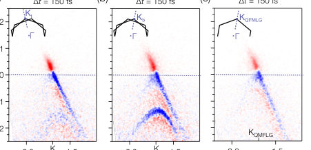
<figcaption class="paper-figure-caption"><b>Fig 3.</b> FIG. 3. (Color online) Excited carrier dynamics at the Dirac cones of the top layer, bottom layer, and bare QFMLG. Dif- ference plots at ∆t = 150 fs near (a) Kt, (b) Kb, and (c) KQFMLG, where KQFMLG denotes the K point of the uncov- ered quasi-free-standing monolayer graphene on SiC.</figcaption>
</figure>
<figure class="paper-figure-card">
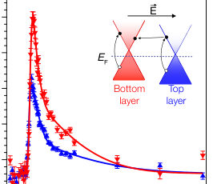
<figcaption class="paper-figure-caption"><b>Fig 4.</b> FIG. 4. (Color online) Time-dependent electronic temper- ature Te(t) for the top layer (blue) and bottom layer (red). Symbols are experimental data; solid lines are fits to the three- temperature model described in the text. The inset sketches the proposed ultrafast electron transfer from the top to the bottom layer in the built-in interlayer electric field ⃗E. The curved arrows indicate optical excitation, and the arrow be- tween the cones indicates interlayer electron transfer.</figcaption>
</figure>
<figure class="paper-figure-card">
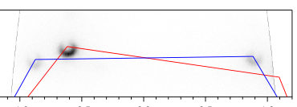
<figcaption class="paper-figure-caption"><b>Fig 5.</b> FIG. 6. (Color online) Characterization of the twist angle. Constant-energy map measured 200 meV below the Fermi energy on the tBLG sample at the SGM-4 beamline using 70 eV photons with linear horizontal polarization. Red (blue) lines mark part of the hexagonal Brillouin zone of the top (bottom) graphene layer.</figcaption>
</figure>
</div>

<p><strong>Summary.</strong> This work uses time-resolved ARPES to probe the dynamics of excitons and hot carriers in twisted bilayer graphene. The authors successfully identify a 'ghost-Fano' exciton signature and reveal that an inherent interlayer electric field causes the two graphene layers to reach different peak electronic temperatures. This demonstrates how electrostatic asymmetry can control non-equilibrium energy flow in correlated 2D systems.</p>
<p><strong>Why it may be interesting.</strong> The study provides direct experimental evidence of non-equilibrium energy coupling and correlated excitonic physics in a tunable 2D material system, which is highly relevant for understanding correlated electronic states in novel quantum materials.</p>
<details>
<summary>Detailed structure</summary>
<p><strong>Main problem.</strong> The study investigates the dynamics of excitons and charge carriers in twisted bilayer graphene (tBLG) to understand interlayer energy transfer and correlated electronic states.</p>
<p><strong>Main result.</strong> The research identified a 'ghost-Fano' exciton signature and demonstrated that an interlayer electric field drives an ultrafast, asymmetric redistribution of electronic energy between the two graphene layers.</p>
<p><strong>Method.</strong> Time-resolved Angle-Resolved Photoemission Spectroscopy (TR-ARPES) was employed to track spectral features and measure time-dependent electronic temperatures.</p>
<p><strong>Model / system.</strong> The system is twisted bilayer graphene (tBLG) on SiC at a twist angle of $9 \pm 1^\circ$. The analysis involves modeling carrier cooling using a three-temperature model and interpreting spectral features via exciton theory.</p>
<p><strong>Key observables.</strong> Spectral features in the hybridization-induced band gap (ghost-Fano exciton), layer-resolved electronic temperatures ($T_e$), and time-dependent photoemission intensity differences.</p>
<p><strong>Important parameters / regimes.</strong> Twist angle ($9 \pm 1^\circ$), doping offset (30 meV), interlayer electric field ($\approx 0.1 	ext{ V/nm}$), and characteristic decay times ($   au_X = 300  ext{ fs}$).</p>
<p><strong>Assumptions / limitations.</strong> The binding energy estimate from energy separation is approximate, and the temperature asymmetry analysis assumes energy transfer occurs during the initial excitation/thermalization stage.</p>
<p><strong>Figures summary.</strong> Figures illustrate ARPES intensity maps, time-dependent photoemission intensity differences for exciton/conduction band features, and plots showing the distinct, asymmetric evolution of electronic temperature in the top versus bottom graphene layers.</p>
<p><strong>Paper structure.</strong> The paper progresses from characterizing the tBLG structure and observing the exciton signature via ARPES, to quantifying the layer-dependent carrier cooling dynamics, and finally attributing the temperature asymmetry to interlayer energy transfer driven by doping-induced fields.</p>
</details>
<details>
<summary>Abstract</summary>
<p>Twisted bilayer graphene (tBLG) on H-intercalated SiC (twist angle of $9 \pm 1^{\circ}$) is studied by position\mbox{-}, time\mbox{-}, and angle-resolved photoemission spectroscopy (ARPES). Both graphene layers are hole doped, with a Dirac-point offset of 30~meV. Time-resolved ARPES near the van Hove singularity reveals a spectral feature within the hybridization-induced band gap, together with excited electrons in the conduction band. The in-gap feature exhibits distinct dynamics, and its binding energy and $k$-space location are consistent with the proposed non-hydrogenic ``ghost-Fano'' exciton arising from destructive interference between two nearly degenerate excitonic channels. Near the Dirac points, the twist separates the largely layer-polarized Dirac cones in momentum space, providing direct layer selectivity. We find markedly different peak electronic temperatures in the two graphene layers, even though their subsequent cooling dynamics are very similar. We attribute this to an ultrafast interlayer redistribution of electronic energy, driven by an interlayer electric field that arises from the different doping in the layers.</p>
</details>
<p><sub><a href="#top">↑ back to top</a></sub></p>

<p><a id="paper-2610.18653"></a></p>
<h3 id="extending-the-mean-first-passage-time-formalism-to-the-reconstruction-of-high-free-energy-barriers-a-top-start-approach"><a href="http://arxiv.org/abs/2610.18653v1">Extending the mean first-passage-time formalism to the reconstruction of high free-energy barriers: A top-start approach</a></h3>
<p><strong>Authors:</strong> Ying Jiang, Ivan Saika-Voivod<br>
<strong>Type:</strong> theory · <strong>Category:</strong> statistical mechanics · <strong>PDF:</strong> <a href="https://arxiv.org/pdf/2610.18653v1">https://arxiv.org/pdf/2610.18653v1</a><br>
<strong>Analysis basis:</strong> full PDF text, analyzed in chunks
<strong>Topic relevance:</strong> <code>Keldysh / 2PI / non-Gaussian methods</code> <strong>1/5</strong> · <code>analog quantum simulation</code> <strong>1/5</strong> · <code>correlated / nonlocal dissipation</code> <strong>1/5</strong> · <code>driven-dissipative phase transition</code> <strong>1/5</strong> · <code>methods for driven-dissipative</code> <strong>1/5</strong> · <code>non-equilibrium universality</code> <strong>1/5</strong> · <code>quantum measurements</code> <strong>1/5</strong> · <code>scars &amp; prethermalization</code> <strong>1/5</strong></p>
<div class="figure-strip-hint">↔ Scroll figures horizontally</div>
<div class="paper-figures-scroll">
<figure class="paper-figure-card">

<figcaption class="paper-figure-caption"><b>Fig 1.</b> FIG. 1: Schematic representation of regions A and B relative to the common reflecting and initial position a = x0. Region A extends from a toward the absorbing boundary b1 &lt; a and carries a steady-state flux JA &lt; 0, whereas region B extends from a toward the absorbing boundary b2 &gt; a and carries a steady-state flux JB &gt; 0. The position a need not coincide with the free-energy maximum.</figcaption>
</figure>
<figure class="paper-figure-card">

<figcaption class="paper-figure-caption"><b>Fig 2.</b> FIG. 2: Model double-well potentials used in the RW simulations for the low-, medium-, and high-barrier cases. The corresponding barrier heights, measured from the left-well minimum, are approximately 2, 8, and 20kBT, respectively.</figcaption>
</figure>
<figure class="paper-figure-card">

<figcaption class="paper-figure-caption"><b>Fig 3.</b> FIG. 3: Conventional MFPT reconstruction for the low- and medium-barrier model potentials. The first and second rows correspond to the low- and medium-barrier cases, respectively. From left to right, the columns show Pst(x), −lnPst(x), the MFPT τ(x), and the reconstructed free-energy profile βU(x). All the RW results are compared with TM calculations, while the reconstructed free-energy profiles are compared with the corresponding model potentials.</figcaption>
</figure>
<figure class="paper-figure-card">

<figcaption class="paper-figure-caption"><b>Fig 4.</b> FIG. 4: Two-region reconstruction for the low-, medium-, and high-barrier model potentials. The rows correspond to increasing barrier height. From left to right, the columns show the region-specific steady-state distributions PA st(x) and PB st(x), the corresponding MFPTs τA(x) and τB(x), and the reconstructed free-energy profile βU(x). All the RW results are compared with TM calculations. In the free-energy panels, the model potential is compared with reconstructions obtained from the RW and TM quantities for regions A and B.</figcaption>
</figure>
<figure class="paper-figure-card">
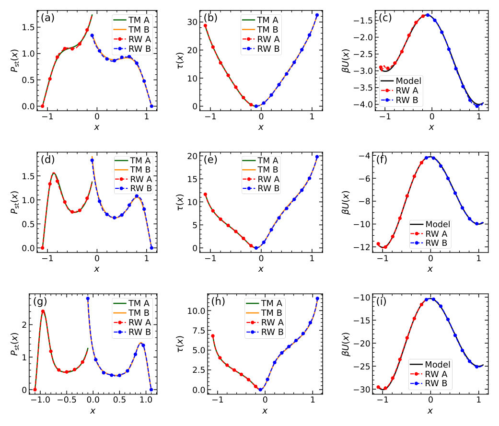
<figcaption class="paper-figure-caption"><b>Fig 5.</b> FIG. 5: Top-start reconstruction for the low-, medium-, and high-barrier model potentials. The rows correspond to increasing barrier height. From left to right, the columns show the region-specific steady-state distributions PA st(x) and PB st(x), the corresponding MFPTs τA(x) and τB(x), and the reconstructed free-energy profile βU(x). The steady-state distributions and MFPTs obtained from the top-start RW trajectories are compared with TM calculations, while the reconstructed free-energy profiles are compared directly with the corresponding model potentials.</figcaption>
</figure>
</div>

<p><strong>Summary.</strong> This work extends the Mean First-Passage Time (MFPT) formalism to accurately map high free-energy barriers. It introduces a 'top-start' simulation technique that bypasses the need to observe rare spontaneous barrier crossings. This allows for reliable reconstruction of free-energy profiles in systems exhibiting extremely slow kinetics.</p>
<p><strong>Why it may be interesting.</strong> While focused on classical statistical mechanics, the mathematical techniques for handling rare events and reconstructing underlying potentials from kinetic measurements are highly relevant to open quantum systems where tunneling or barrier crossing rates are critical.</p>
<details>
<summary>Detailed structure</summary>
<p><strong>Main problem.</strong> The paper addresses the challenge of reconstructing one-dimensional free-energy profiles, particularly when the barriers separating metastable states are very high.</p>
<p><strong>Main result.</strong> A novel "top-start" extension to the Mean First-Passage Time (MFPT) formalism is introduced, which accurately reconstructs free-energy profiles even when spontaneous barrier crossings are prohibitively rare.</p>
<p><strong>Method.</strong> The method utilizes Markov-chain transition-matrix formulations, establishing the equivalence between the top-start approach and traditional two-region constructions.</p>
<p><strong>Model / system.</strong> The model involves a particle undergoing Brownian motion along a one-dimensional potential landscape, which is treated using a discrete Markov process.</p>
<p><strong>Key observables.</strong> Mean First-Passage Time (MFPT, $   au(x)$), steady-state distribution ($P_{st}(x)$), and the free-energy profile ($eta U(x)$).</p>
<p><strong>Important parameters / regimes.</strong> The analysis covers low, medium, and high free-energy barrier regimes, with $eta = 1/(k_B T)$ being a key parameter.</p>
<p><strong>Assumptions / limitations.</strong> The dynamics are assumed to be Markovian, and the reconstruction relies on the relationship between MFPT, steady-state flux, and the free-energy profile.</p>
<p><strong>Figures summary.</strong> Figure 6 illustrates the decomposition of a top-start trajectory into multiple region-restricted trajectories, demonstrating the core mechanism of the method.</p>
<p><strong>Paper structure.</strong> The paper first introduces the problem and the limitations of conventional MFPT sampling. It then develops the theoretical framework using Markov chains, proposes the top-start scheme, and validates the method using random-walk simulations against exact transition-matrix benchmarks.</p>
</details>
<details>
<summary>Abstract</summary>
<p>Rare events, such as crystal nucleation in mildly supercooled liquids, are characterized by waiting times that can be much longer than the timescale of the underlying microscopic dynamics. The mean first-passage time (MFPT) formalism [J. Wedekind and D. Reguera, J. Phys. Chem. B 112, 11060 (2008)] provides a route to reconstruct one-dimensional free-energy profiles from the MFPT and steady-state distribution measured along a reaction coordinate, but conventional implementations become inefficient for sufficiently high barriers because spontaneous crossings are rarely observed. We introduce a "top-start" extension that initiates trajectories near the barrier top and reconstructs the free-energy profile from their subsequent evolution away from the barrier toward lower-free-energy regions. We establish the equivalence between the top-start and two-region constructions using a Markov-chain transition-matrix formulation. We validate the method using one-dimensional random-walk simulations across low, medium, and high free-energy barriers, with transition-matrix calculations providing an exact benchmark for the corresponding discretized models. The top-start reconstruction remains accurate in the high-barrier regime where conventional MFPT sampling becomes prohibitively inefficient.</p>
</details>
<p><sub><a href="#top">↑ back to top</a></sub></p>

<p><a id="paper-2610.17599"></a></p>
<h3 id="fast-charging-of-quantum-batteries-assisted-by-nonlinear-couplings"><a href="http://arxiv.org/abs/2610.17599v1">Fast charging of quantum batteries assisted by nonlinear couplings</a></h3>
<p><strong>Authors:</strong> Y. -J. Shen, Y. -C. Shen, C. -H. Chu, H. H. Jen<br>
<strong>Type:</strong> theory · <strong>Category:</strong> other · <strong>PDF:</strong> <a href="https://arxiv.org/pdf/2610.17599v1">https://arxiv.org/pdf/2610.17599v1</a><br>
<strong>Analysis basis:</strong> full PDF text, analyzed in chunks
<strong>Topic relevance:</strong> <code>Keldysh / 2PI / non-Gaussian methods</code> <strong>1/5</strong> · <code>analog quantum simulation</code> <strong>1/5</strong> · <code>correlated / nonlocal dissipation</code> <strong>1/5</strong> · <code>driven-dissipative phase transition</code> <strong>1/5</strong> · <code>methods for driven-dissipative</code> <strong>1/5</strong> · <code>non-equilibrium universality</code> <strong>1/5</strong> · <code>quantum measurements</code> <strong>1/5</strong> · <code>scars &amp; prethermalization</code> <strong>1/5</strong></p>
<div class="figure-strip-hint">↔ Scroll figures horizontally</div>
<div class="paper-figures-scroll">
<figure class="paper-figure-card">
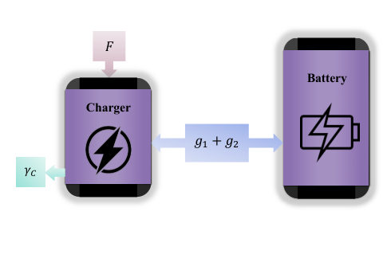
<figcaption class="paper-figure-caption"><b>Fig 1.</b> FIG. 1. Schematic of the charger-battery setup with nonlinear cou- pling. The setup of a quantum battery (B)is coupled to a charger (C), mediated by a combination of linear (g1) and nonlinear (g2) coupling terms. In addition, the charger is subject to an external coherent driv- ing strength F and a dephasing rate γC.</figcaption>
</figure>
<figure class="paper-figure-card">

<figcaption class="paper-figure-caption"><b>Fig 2.</b> FIG. 2. Time evolution of battery energy and ergotropy under nonlin- ear couplings. The dynamics of energy EB and ergotropy EB respec- tively for (a,b) F = 0.5ωB and (c, d) F = 0.1ωB, with the same dephasing rate γC = 0.1ωB under linear-coupling regime g2 = 0 and a regime with finite nonlinear couplings. Critically damped be- haviors can be observed as g2 increases, accelerating the charging dynamics.</figcaption>
</figure>
<figure class="paper-figure-card">

<figcaption class="paper-figure-caption"><b>Fig 3.</b> FIG. 3. Plot of charging time (τ) as a function of γC with different g2. Rescaled charging time τ versus charger dissipation rate γC under (a) weak driving (F/g1 = 0.1), (b) strong driving (F/g1 = 10), and (c) optimal driving (F/g1 = 0.5), with g1 = ωB and n = 18 throughout. In each panel, blue dots show the g2 = 0 baseline, while green triangles show the numerical results for finite g2, taking the values g2 = 0.1ωB (top row), g2 = 0.5ωB (middle row), and g2 = 2ωB (bottom row). The vertical and horizontal gray lines define the optimal dephasing rate (γ∗ C) that minimizes the charging time for each numerical result with different g2. As g2 increases, the charging time deviates significantly...</figcaption>
</figure>
<figure class="paper-figure-card">

<figcaption class="paper-figure-caption"><b>Fig 4.</b> FIG. 4. Dynamics of energy and charging time for a quantum battery with nonlinear coupling without external driving. (a) Time evolu- tion of the normalized battery (EB) and charger (EC) energies un- der the resonance condition ωB = ωC = ωD, with γC = 2ωB and g1 = ωB. We compare protocol A (blue), corresponding to classical driving with F/g1 = 0.5, and protocol B (orange), corresponding to nonlinear coupling without external driving, with g2/g1 = 0.5. While both protocols approach the same steady-state energy, EB = EC = 0.5ωB, protocol B exhibits significantly faster initial charging dynamics, highlighting the charging enhancement enabled by nonlinear coupling alone. Note that EC(t) = EB(t)...</figcaption>
</figure>
</div>

<p><strong>Summary.</strong> This theoretical study demonstrates that incorporating nonlinear couplings between a charger and a quantum battery significantly accelerates the energy charging process. The authors show that this nonlinear interaction acts as a powerful resource, allowing for fast charging even when no external driving field is applied. This broadens the understanding of interaction-enabled quantum advantages in energy storage.</p>
<p><strong>Why it may be interesting.</strong> This work directly addresses open quantum systems and energy transfer, utilizing concepts like coupling-induced dynamics and non-equilibrium thermodynamics, which are central to AMO physics.</p>
<details>
<summary>Detailed structure</summary>
<p><strong>Main problem.</strong> The paper investigates how nonlinear couplings can accelerate the charging process of quantum batteries, potentially surpassing the performance limits of classical or linearly coupled quantum systems.</p>
<p><strong>Main result.</strong> Nonlinear charger-battery interactions are shown to be an effective resource for accelerating charging, enabling faster charging even in the absence of external driving.</p>
<p><strong>Method.</strong> The analysis uses theoretical modeling based on the master equation to derive the time evolution of energy and ergotropy in the quantum battery system.</p>
<p><strong>Model / system.</strong> The system consists of a charger coupled to a quantum battery, modeled with a Hamiltonian including linear and nonlinear coupling terms, and subject to external driving and dephasing.</p>
<p><strong>Key observables.</strong> Battery Energy (E_B), Ergotropy, and the characteristic Charging Time ($\tau$).</p>
<p><strong>Important parameters / regimes.</strong> Nonlinear coupling strength ($g_2$), linear coupling strength ($g_1$), external driving strength ($F$), and dephasing rate ($\gamma_C$).</p>
<p><strong>Assumptions / limitations.</strong> The analysis is performed in the interaction picture under the resonance condition, and the system is modeled using two-level approximations.</p>
<p><strong>Figures summary.</strong> Figures illustrate the time evolution of energy and ergotropy under varying coupling strengths and driving conditions, and plot the charging time ($\tau$) dependence on the dephasing rate ($\gamma_C$).</p>
<p><strong>Paper structure.</strong> The paper systematically analyzes the charging dynamics by first establishing the model Hamiltonian, then deriving the equations of motion, and finally comparing the charging time and energy storage capabilities across weak, strong, and undriven regimes, highlighting the role of $g_2$.</p>
</details>
<details>
<summary>Abstract</summary>
<p>Charger-mediated quantum batteries offer promising opportunities for efficient energy transfer and storage at the quantum level, with potential advantages beyond their classical counterparts. Here, we theoretically demonstrate that nonlinear charger-battery interactions can substantially accelerate the charging of quantum batteries. In the weak-driving regime, sufficiently strong nonlinear coupling can dominate over the effect of dephasing and significantly reduce the charging time. In the strong- and optimal-driving regimes, where the optimal driving strength maximizes the steady-state ergotropy in the linear-coupling regime, nonlinear coupling gives rise to a new optimum in the charging time beyond that of the linear-coupling regime, accompanied by nearly critically damped dynamics. Remarkably, even in the absence of external driving, nonlinear coupling alone can substantially reduce the charging time, providing an alternative route toward fast battery charging. Our results establish nonlinear charger-battery coupling as an effective resource for accelerating quantum-battery charging and broaden the scope of interaction-enabled quantum advantages in energy transfer and storage.</p>
</details>
<p><sub><a href="#top">↑ back to top</a></sub></p>

<p><a id="paper-2610.17920"></a></p>
<h3 id="conformal-soft-modes-at-elastic-instabilities"><a href="http://arxiv.org/abs/2610.17920v1">Conformal soft modes at elastic instabilities</a></h3>
<p><strong>Authors:</strong> Lars Franke, Nick Sander, Markus Garst<br>
<strong>Type:</strong> theory · <strong>Category:</strong> strongly correlated electrons · <strong>PDF:</strong> <a href="https://arxiv.org/pdf/2610.17920v1">https://arxiv.org/pdf/2610.17920v1</a><br>
<strong>Analysis basis:</strong> full PDF text, analyzed in chunks
<strong>Topic relevance:</strong> <code>Frenkel-Kontorova</code> <strong>1/5</strong> · <code>Keldysh / 2PI / non-Gaussian methods</code> <strong>1/5</strong> · <code>analog quantum simulation</code> <strong>1/5</strong> · <code>driven-dissipative phase transition</code> <strong>1/5</strong> · <code>non-equilibrium universality</code> <strong>1/5</strong></p>
<div class="figure-strip-hint">↔ Scroll figures horizontally</div>
<div class="paper-figures-scroll">
<figure class="paper-figure-card">
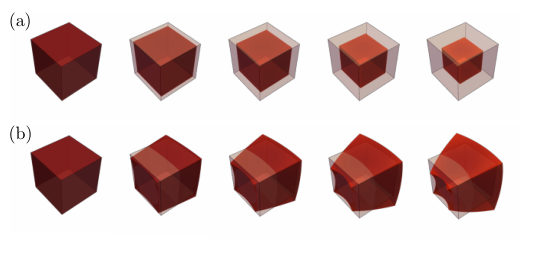
<figcaption class="paper-figure-caption"><b>Fig 1.</b> FIG. 1. Macroscopic zero modes of a crystal with vanishing bulk modulus and principal strain εA ij ∝δij. (a) Dilation and (b) a special conformal transformation (SCT). The amplitude increases from left to right and is exaggerated for illustration purposes.</figcaption>
</figure>
<figure class="paper-figure-card">

<figcaption class="paper-figure-caption"><b>Fig 2.</b> FIG. 2. Macroscopic zero mode at a symmetry-breaking insta- bility specified by the amplitude d in Eq. (11). The amplitude increases from left to right and is exaggerated for illustration purposes.</figcaption>
</figure>
</div>

<p><strong>Summary.</strong> This work investigates the mathematical nature of critical fluctuations in crystals approaching elastic phase transitions. It shows that the associated zero modes satisfy equations related to the conformal Killing equation. The findings provide a systematic classification of these critical modes, which have implications for understanding mechanical metamaterials and critical elastic behavior.</p>
<p><strong>Why it may be interesting.</strong> While focused on solid-state elasticity, the mathematical framework—relating critical fluctuations to conformal symmetries—is highly relevant to theoretical physics dealing with scale invariance, critical phenomena, and emergent symmetries in many-body systems.</p>
<details>
<summary>Detailed structure</summary>
<p><strong>Main problem.</strong> The paper analyzes the critical fluctuations and zero modes of the displacement field in crystalline solids near continuous elastic phase transitions (elastic instabilities).</p>
<p><strong>Main result.</strong> The critical modes obey a condition reminiscent of the conformal Killing equation, yielding specific sets of zero modes (e.g., dilation and three special conformal transformations for isostructural instability).</p>
<p><strong>Method.</strong> The analysis uses linear elasticity theory, deriving zero mode conditions from the vanishing internal stress ($\partial_i u_j + \partial_j u_i = \sum \lambda_\alpha \varepsilon^A_{ij}$) and comparing these solutions to known mathematical structures.</p>
<p><strong>Model / system.</strong> The system is crystalline solids undergoing elastic instabilities, modeled using the displacement vector $\mathbf{u}(\mathbf{x})$ and the strain tensor $\varepsilon_{ij}$. The analysis is generalized to extremal mechanical metamaterials.</p>
<p><strong>Key observables.</strong> Critical modes of the displacement field, principal strains ($\epsilon_\alpha$), and the vanishing of the determinant of principal strains.</p>
<p><strong>Important parameters / regimes.</strong> Elastic eigenmoduli ($C_\alpha$), the dimensionality of the critical subspace ($\Gamma$), and the wavevector $\mathbf{q}$ in Fourier space.</p>
<p><strong>Assumptions / limitations.</strong> The analysis is restricted to linear elasticity theory and assumes the absence of external stresses; later notes suggest the initial assumption of analyticity for $\mathbf{u}(\mathbf{q})$ is too restrictive.</p>
<p><strong>Figures summary.</strong> Figures illustrate the macroscopic zero modes for both volumetric singlet (dilation and SCT) and symmetry-breaking instabilities, showing the functional form of the displacement field.</p>
<p><strong>Paper structure.</strong> The paper systematically analyzes the zero mode condition by first establishing the connection to the conformal Killing equation for isostructural instabilities, then extending the analysis to symmetry-breaking instabilities, and finally using group theory and determinant analysis to constrain the principal strains.</p>
</details>
<details>
<summary>Abstract</summary>
<p>In case a crystal is close to a continuous elastic phase transition, pronounced critical fluctuations emerge. We show that on the level of linear elasticity theory the displacement vector for these critical modes obeys a condition reminiscent of the conformal Killing equation. For an isostructural instability, four critical modes arise corresponding to one dilation and three special conformal transformations. At crystal symmetry-breaking instabilities, the critical fluctuations include a continuum of modes even for crystals with finite size. For certain cases, these comprise the conformal transformations associated with two-dimensional Minkowski space. These results have implications for critical elastic phenomena as well as for extremal mechanical metamaterials.</p>
</details>
<p><sub><a href="#top">↑ back to top</a></sub></p>

<p><a id="paper-2610.18236"></a></p>
<h3 id="resource-based-reliability-of-quantum-coherent-devices"><a href="http://arxiv.org/abs/2610.18236v1">Resource-based reliability of quantum-coherent devices</a></h3>
<p><strong>Authors:</strong> Bowen Sun, D. L. Zhou<br>
<strong>Type:</strong> theory · <strong>Category:</strong> quantum information and computing · <strong>PDF:</strong> <a href="https://arxiv.org/pdf/2610.18236v1">https://arxiv.org/pdf/2610.18236v1</a><br>
<strong>Analysis basis:</strong> full PDF text, analyzed in chunks
<strong>Topic relevance:</strong> <code>correlated / nonlocal dissipation</code> <strong>1/5</strong> · <code>driven-dissipative phase transition</code> <strong>1/5</strong> · <code>interference shaping light</code> <strong>1/5</strong> · <code>methods for driven-dissipative</code> <strong>1/5</strong> · <code>quantum measurements</code> <strong>1/5</strong></p>
<div class="figure-strip-hint">↔ Scroll figures horizontally</div>
<div class="paper-figures-scroll">
<figure class="paper-figure-card">
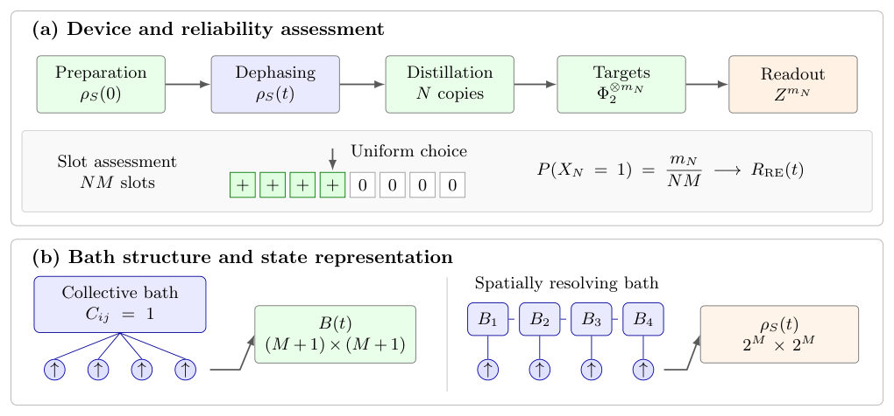
<figcaption class="paper-figure-caption"><b>Fig 1.</b> FIG. 1. QRNG operation and resource-reliability assessment. (a) A prepared M-spin register undergoes pure dephasing. Incoherent processing of N independent copies supplies mN target coherent qubits for readout. The conversion error is ϵN, and the residual state τN is excluded from the yield. The separate assessment strip contains NM logical slots, with + denoting target slots (Φ2) and 0 incoherent placeholders (|0⟩⟨0|). Uniform sampling gives the exact target-label probability mN/(NM), approaching RRE(t) for optimal processing with ϵN →0. Slot counts are schematic. (b) For the symmetric product input, a collective bath (gik = gk, hence Cij = 1) permits the magnetization-sector...</figcaption>
</figure>
<figure class="paper-figure-card">
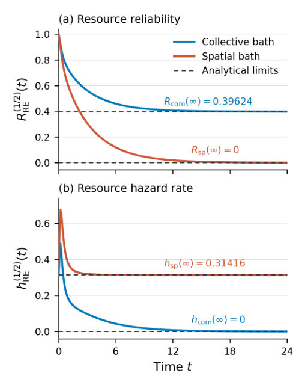
<figcaption class="paper-figure-caption"><b>Fig 2.</b> FIG. 2. QRNG resource reliability with analytical long-time reference lines for M = 3, q = 1/2, η = 0.10, ωc = 4, β = 2, and ℏ= 1. Both baths have the same isolated-spin ker- nel Γ(t), and the spatial bath uses Cij = exp[−|i −j|a/ξ] with ξ/a = 0.75. (a) Reliability curves and their limits (log2 3)/4 ≃0.39624 (collective) and 0 (spatial). (b) Numer- ically differentiated resource hazard rates and their limits 0 (collective) and 2πη/β ≃0.31416 (spatial). Solid curves are numerical results, and dashed lines are analytical predictions. The annotations suppress the common RE and (1/2) indices.</figcaption>
</figure>
<figure class="paper-figure-card">
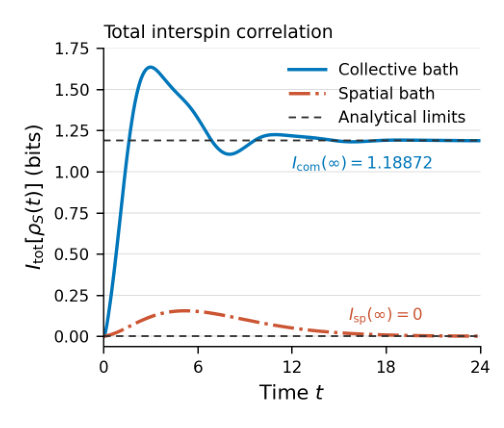
<figcaption class="paper-figure-caption"><b>Fig 3.</b> FIG. 3. Total interspin correlation Itot[ρS(t)] of the full re- duced spin state, with all bath-induced phases retained. Pa- rameters are the same as in Fig. 2, with M = 3 and q = 1/2. The solid blue and dash-dotted orange curves correspond to collective and finite-range spatial baths. Dashed horizontal lines mark the analytical limits Icom(∞) = 3(log2 3)/4 ≃ 1.18872 bits and Isp(∞) = 0, where com and sp label the two baths. Equation (64) relates this total correlation to the difference between total coherence and the sum of one-spin coherences.</figcaption>
</figure>
<figure class="paper-figure-card">

<figcaption class="paper-figure-caption"><b>Fig 4.</b> FIG. 4. Register-size and preparation-bias dependence of QRNG resource reliability. (a),(c) Collective bath with M = 2, 4, 8, 16, 64, 256. (b),(d) Spatially resolving bath with M = 2, 4, 8 and ξ/a = 0.75. The upper row uses q = 0.5 and the lower row q = 0.2. Each column has its own size legend, with matching colors, line styles, and markers for the shared sizes. Markers indicate selected numerical time points. The common vertical scale displays CRE[ρS(t)]/M, whose initial values are 1 and h2(0.2) ≃0.72193, respectively. Inset in (c): exact collective long-time reliability for 2 ≤M ≤256, evaluated from Eq. (48) for both biases. All bath parameters are the same as in Fig. 2.</figcaption>
</figure>
<figure class="paper-figure-card">

<figcaption class="paper-figure-caption"><b>Fig 5.</b> FIG. 6. Full-phase interferometer readout for M = 4, T2 = 4, η = 0.06, ωc = 5, β = 3, and ℏ= 1. Ideal preparation and analysis are assumed. (a) CSS all-zero probability and (b) GHZ parity mean for local, spatial (ξ/a = 1.2), and collective baths at the same Γ(t). All bath-induced phases are retained.</figcaption>
</figure>
</div>

<p><strong>Summary.</strong> This paper introduces a resource-based framework to assess the reliability of quantum devices whose failure modes are complex and do not map to simple failure subspaces. By quantifying the remaining task-relevant resource (like coherence) relative to an ideal capacity, the authors provide a robust, task-specific metric. This is demonstrated using spin-boson models applied to quantum random number generators and interferometers.</p>
<p><strong>Why it may be interesting.</strong> This work provides a rigorous, task-specific methodology for characterizing quantum device performance degradation that goes beyond simple measures like fidelity or survival probability, which is crucial for practical quantum technology assessment.</p>
<details>
<summary>Detailed structure</summary>
<p><strong>Main problem.</strong> The paper addresses the challenge of assessing quantum device reliability when failure is not characterized by entering a fixed failure subspace, necessitating a resource-based framework.</p>
<p><strong>Main result.</strong> A resource-based reliability framework is proposed, quantifying remaining task-relevant resources (like coherence) relative to an ideal capacity, which is distinct from classical survival probability.</p>
<p><strong>Method.</strong> The authors develop the framework by defining a resource measure $Q$ operationally linked to the task, and applying it to model systems like QRNGs and interferometers.</p>
<p><strong>Model / system.</strong> The analysis uses the spin-boson model to simulate open quantum systems, specifically examining how environmental noise affects coherence in multi-spin systems. The framework is applied to model quantum random number generators and two-port interferometers.</p>
<p><strong>Key observables.</strong> Relative-entropy coherence, logarithmic $l_1$ coherence (fringe resource), and the resource reliability $R_Q(t) = Q[
ho(t)] / Q_{	ext{max}}$.</p>
<p><strong>Important parameters / regimes.</strong> The coherence decay rate $\Gamma(t)$, the number of spins $M$, and the correlation parameter $c$ used to model noise correlations.</p>
<p><strong>Assumptions / limitations.</strong> The resource reliability is a capacity fraction, not a survival probability; the analysis often assumes the bath is unobserved during operation (trusted-device model).</p>
<p><strong>Figures summary.</strong> Figure 7 compares resource inference for QRNGs under different noise models (collective vs. partially correlated) and shows the one-spin interferometer reliability and inferred all-correct probability over simulated records.</p>
<p><strong>Paper structure.</strong> The paper first introduces the resource-based reliability concept, contrasting it with fixed-subspace failure models. It then applies this to specific systems (QRNG, interferometer) using the spin-boson model to analyze coherence decay under various noise correlations, culminating in finite-record simulations to validate the resource assessment.</p>
</details>
<details>
<summary>Abstract</summary>
<p>Quantum devices can lose the resource needed for a specified function without entering a fixed failure subspace. We propose a resource-based reliability framework for this situation, quantifying the remaining task-relevant resource relative to a stated ideal capacity. The resource measure is selected through its operational connection to the task and the allowed operations. We develop this approach for a trusted quantum random-number generator and a calibrated two-port interferometer. Relative-entropy coherence determines the optimal asymptotic yield of standard coherent qubits under incoherent operations for the former, while logarithmic $l_1$ coherence quantifies the fringe resource of the latter and determines its calibrated correct-port probability. An exactly solvable multi-spin spin-boson model illustrates how environmental records affect these resources at the same isolated-spin dephasing strength. Collective noise preserves coherence within magnetization sectors for product inputs, but enhances the decay of Greenberger-Horne-Zeilinger branch coherence. Finite-record simulations connect the resource definitions to measurement counts and show that increasing the sample size reduces statistical fluctuations without eliminating bias from an incorrect many-spin noise model. The resulting framework provides a task-specific route to reliability assessment when a fixed failure projector is insufficient, while keeping retained resource capacity distinct from a classical survival probability.</p>
</details>
<p><sub><a href="#top">↑ back to top</a></sub></p>

<p><a id="paper-2610.17923"></a></p>
<h3 id="dynamical-bec-formation-and-vanishing-entropy-for-trapped-bosons-in-non-relativistic-qed-via-nonlinear-resonance-cascades"><a href="http://arxiv.org/abs/2610.17923v1">Dynamical BEC formation and vanishing entropy for trapped bosons in non-relativistic QED via nonlinear resonance cascades</a></h3>
<p><strong>Authors:</strong> Thomas Chen, Ali Mezher<br>
<strong>Type:</strong> theory · <strong>Category:</strong> quantum gases · <strong>PDF:</strong> <a href="https://arxiv.org/pdf/2610.17923v1">https://arxiv.org/pdf/2610.17923v1</a><br>
<strong>Analysis basis:</strong> full PDF text, analyzed in chunks
<strong>Topic relevance:</strong> <code>Keldysh / 2PI / non-Gaussian methods</code> <strong>1/5</strong> · <code>Tavis-Cummings &amp; cavity-many-emitter</code> <strong>1/5</strong> · <code>analog quantum simulation</code> <strong>1/5</strong> · <code>quantum measurements</code> <strong>1/5</strong></p>
<div class="figure-strip-hint">↔ Scroll figures horizontally</div>
<div class="paper-figures-scroll">
<figure class="paper-figure-card">

<figcaption class="paper-figure-caption"><b>Fig 1.</b> Low-resolution page preview, page 2</figcaption>
</figure>
<figure class="paper-figure-card">

<figcaption class="paper-figure-caption"><b>Fig 2.</b> Low-resolution page preview, page 3</figcaption>
</figure>
<figure class="paper-figure-card">

<figcaption class="paper-figure-caption"><b>Fig 3.</b> Low-resolution page preview, page 4</figcaption>
</figure>
<figure class="paper-figure-card">
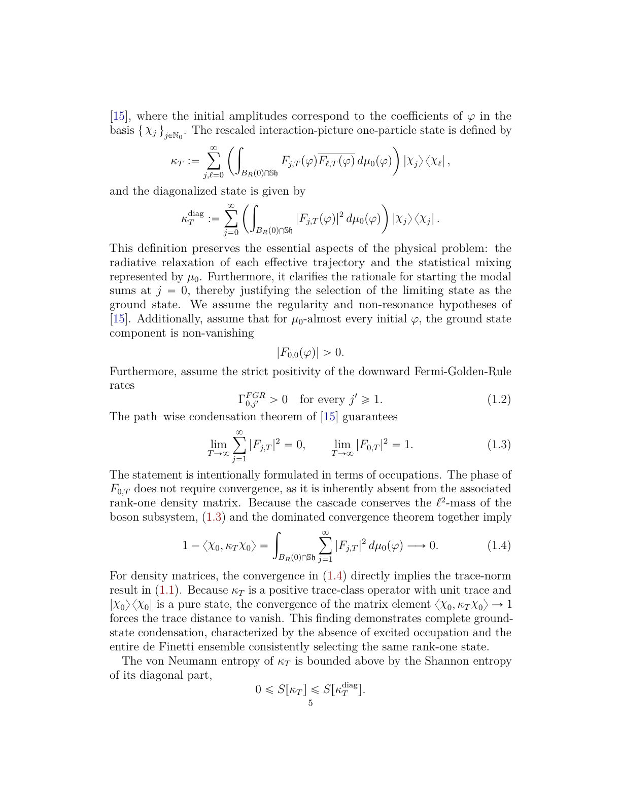
<figcaption class="paper-figure-caption"><b>Fig 4.</b> Low-resolution page preview, page 5</figcaption>
</figure>
<figure class="paper-figure-card">

<figcaption class="paper-figure-caption"><b>Fig 5.</b> Low-resolution page preview, page 6</figcaption>
</figure>
</div>

<p><strong>Summary.</strong> This paper provides a rigorous mathematical proof that trapped bosons coupled to a quantized radiation field will dynamically form a Bose-Einstein condensate, regardless of the initial mixedness of the state. By tracking the one-particle density matrix, the authors show that the system's entropy vanishes asymptotically, purifying the state to the ground state. This establishes a fundamental mechanism for quantum state purification driven by radiative relaxation.</p>
<p><strong>Why it may be interesting.</strong> This work provides a rigorous mathematical proof for the dynamical purification of quantum states in a realistic, interacting many-body system, bridging the gap between equilibrium theory and time evolution for BEC formation.</p>
<details>
<summary>Detailed structure</summary>
<p><strong>Main problem.</strong> The paper rigorously establishes the dynamical formation of a Bose-Einstein condensate (BEC) and the asymptotic purification of trapped bosons coupled to a quantized radiation field.</p>
<p><strong>Main result.</strong> It proves that any initially mixed, positive-entropy state purifies to the ground state, and the von Neumann entropy of the macroscopic one-particle density matrix vanishes asymptotically.</p>
<p><strong>Method.</strong> The analysis tracks the one-particle density matrix through a nonlinear resonance cascade, employing successive limits: the mean-field limit ($N	o\infty$), the weak-coupling limit ($\eta	o 0$), and the long-time limit ($T	o\infty$).</p>
<p><strong>Model / system.</strong> The system consists of trapped bosons coupled to a quantized radiation field, modeled by a closed, unitary Hamiltonian. The dynamics are analyzed via the Hartree hierarchy derived from the BBGKY hierarchy.</p>
<p><strong>Key observables.</strong> Macroscopic one-particle density matrix ($\kappa_T$) and its von Neumann entropy ($S[\kappa_T]$).</p>
<p><strong>Important parameters / regimes.</strong> Time ($T$), particle number ($N$), and coupling strength ($\eta$); the process is analyzed under the assumption of strictly positive downward Fermi-Golden-Rule rates.</p>
<p><strong>Assumptions / limitations.</strong> The analysis assumes a non-vanishing initial ground state component and relies on taking successive limits ($N	o\infty$, weak-coupling, $T	o\infty$).</p>
<p><strong>Paper structure.</strong> The paper develops the argument by first deriving the Hartree hierarchy, then showing the convergence of the density matrix to the pure ground state projector in the trace norm, and finally demonstrating the vanishing of the von Neumann entropy.</p>
</details>
<details>
<summary>Abstract</summary>
<p>The dynamical formation of a complete Bose-Einstein condensate and the asymptotic purification of trapped bosons coupled to a quantized radiation field are rigorously established. By tracking the macroscopic one-particle density matrix $κ_T$ through a nonlinear resonance cascade, it is demonstrated that radiative relaxation irreversibly depletes all excited trap modes, even when the initial macroscopic state $κ_0$ is genuinely mixed. Here $κ_T$ is an average, with respect to a de Finetti measure $μ_0$, over mean-field particle-field orbits, so that the mixedness of $κ_0$ reflects a statistical ensemble of orbits. Under the assumptions of a non-vanishing initial ground state component and strictly positive downward Fermi-Golden-Rule rates, strong trace-norm convergence to a pure condensate is proven, $$   \lim_{T\to\infty} \| κ_T-|χ_0\rangle\langleχ_0| \|_{\mathfrak{S}_1(\mathfrak{h})} = 0 \, . $$ Furthermore, the von Neumann entropy of the macroscopic one-particle density matrix is shown to vanish asymptotically, $$   \lim_{T\to\infty}S[κ_T]=0 \, , $$ without any claim of monotonicity in $T$. Thus, any initially mixed, positive-entropy state ($0<S[κ_0]<\infty$) is purified to the ground state $|χ_0\rangle\langleχ_0|$. For the proof, we derive the Hartree hierarchy of the coupled system of bosons and photons from the finite-$N$ BBGKY hierarchy of the microscopic quantum many-body system, establishing trace-norm convergence in the mean-field limit as $N\to\infty$. The limits are taken successively; first $N\to\infty$, then the weak-coupling limit, and finally $T\to\infty$. Although the global particle-field evolution remains unitary, the macroscopic one-particle state converges to a pure state as energy and correlations are continuously radiated into the dispersive field.</p>
</details>
<p><sub><a href="#top">↑ back to top</a></sub></p>

<p><a id="paper-2610.17592"></a></p>
<h3 id="universal-entanglement-detection-with-geometrically-optimal-witnesses"><a href="http://arxiv.org/abs/2610.17592v1">Universal entanglement detection with geometrically optimal witnesses</a></h3>
<p><strong>Authors:</strong> Xuanran Zhu, Keyi Huang, Chao Zhang, Xinfang Nie, Qi Zhao, Dawei Lu<br>
<strong>Type:</strong> both · <strong>Category:</strong> quantum information and computing · <strong>PDF:</strong> <a href="https://arxiv.org/pdf/2610.17592v1">https://arxiv.org/pdf/2610.17592v1</a><br>
<strong>Analysis basis:</strong> full PDF text, analyzed in chunks
<strong>Topic relevance:</strong> <code>QC/QI experiment</code> <strong>1/5</strong> · <code>analog quantum simulation</code> <strong>1/5</strong> · <code>quantum measurements</code> <strong>1/5</strong></p>
<div class="figure-strip-hint">↔ Scroll figures horizontally</div>
<div class="paper-figures-scroll">
<figure class="paper-figure-card">
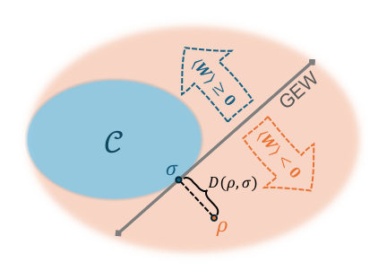
<figcaption class="paper-figure-caption"><b>Fig 1.</b> FIG. 1. Schematic diagram of GEWs for detecting arbitrary entanglement structures. The convex, compact set C denotes the set of states without the desired entanglement structure. For example, for genuine multipartite entanglement detection, C can be chosen as the set of biseparable states. A GEW is constructed based on the nearest state σ ∈C to the target entangled state ρ, as determined by the Hilbert-Schmidt dis- tance D. The hyperplane defined by the GEW separates ρ from C, thereby certifying the entanglement structure of ρ.</figcaption>
</figure>
<figure class="paper-figure-card">

<figcaption class="paper-figure-caption"><b>Fig 2.</b> FIG. 2. Numerical and experimental results for the Horodecki states ρb. A positive value indicates the presence of entangle- ment. The dashed line represents the numerical results of the HS measure. Dots denote the mean expectation values of the GEWs, multiplied by a negative sign, from repeated experi- ments, while the error bars represent the standard deviations. The bound entangled state (BES) regions are shaded in gray.</figcaption>
</figure>
<figure class="paper-figure-card">

<figcaption class="paper-figure-caption"><b>Fig 3.</b> FIG. 3. Numerical and experimental results for the state ϱ in Eq. (11) under depolarizing noise with different visibility p. Here, Wk represents the constructed GEW for the target state ϱ, and a negative value of ⟨Wk⟩indicates the presence of k-entangled states. The dashed lines correspond to the nu- merical results, while the dots denote the experimental results obtained from repeated experiments. The blue and orange regions indicate the areas of different k-entangled states de- tected by the GEW.</figcaption>
</figure>
<figure class="paper-figure-card">
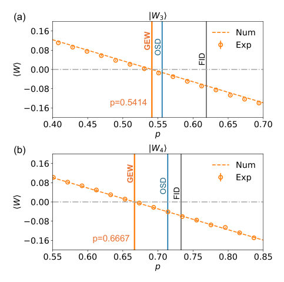
<figcaption class="paper-figure-caption"><b>Fig 4.</b> FIG. 4. Numerical and experimental results for the noisy state Np(|ψ⟩) = p|ψ⟩⟨ψ| + (1 −p) I</figcaption>
</figure>
<figure class="paper-figure-card">
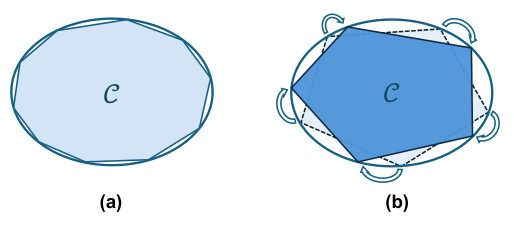
<figcaption class="paper-figure-caption"><b>Fig 5.</b> FIG. 5. Schematic diagram of convex hull approximation (CHA): (a) Traditional CHA: Random sampling of a large number of extreme points. (b) Dynamic CHA: A small num- ber of extreme points characterized by variational parameters.</figcaption>
</figure>
</div>

<p><strong>Summary.</strong> This paper introduces a unified framework to construct geometrically optimal entanglement witnesses (GEWs) that overcome the complexity of high-dimensional quantum state spaces. By defining witnesses based on the nearest separable state in Hilbert-Schmidt space, the method achieves universal detection of various entanglement types. It demonstrates this powerful tool on a four-qubit NMR system, showing enhanced noise robustness and efficiency over prior methods.</p>
<p><strong>Why it may be interesting.</strong> This work provides a powerful, general mathematical tool for quantifying entanglement that is directly applicable to experimental quantum platforms like NMR, bridging abstract theory with concrete physical measurement protocols.</p>
<details>
<summary>Detailed structure</summary>
<p><strong>Main problem.</strong> The core challenge is constructing optimal entanglement witnesses (EWs) for arbitrary quantum systems, especially in high-dimensional spaces, due to structural complexity.</p>
<p><strong>Main result.</strong> The proposed geometrically optimal witnesses (GEWs) provide a universal, efficient, and robust method for detecting bipartite, multipartite, and high-dimensional entanglement structures.</p>
<p><strong>Method.</strong> The method constructs GEWs by leveraging the geometric properties of the target state relative to the set of separable states in Hilbert-Schmidt space, finding the nearest separable state via optimization.</p>
<p><strong>Model / system.</strong> The framework is demonstrated on a four-qubit nuclear spin quantum system using NMR, and the theory applies generally to arbitrary quantum systems and entanglement structures.</p>
<p><strong>Key observables.</strong> Entanglement witness expectation values ($\langle W 
angle$), fidelity ($F$), and the Hilbert-Schmidt (HS) distance measure are key diagnostics.</p>
<p><strong>Important parameters / regimes.</strong> The visibility threshold ($p_{	ext{GEW}}$) under depolarizing noise, and the number of qubits/dimensions ($N=4$ qubits in the example).</p>
<p><strong>Assumptions / limitations.</strong> The numerical optimization used to find the nearest separable state is a convex hull approximation (CHA) and is not guaranteed to find the exact global minimum.</p>
<p><strong>Figures summary.</strong> Figures illustrate the geometric separation between the target state and the set of separable states, show the detection of bound entanglement, and compare noise robustness across different witness types.</p>
<p><strong>Paper structure.</strong> The paper introduces the GEW framework based on geometric optimization, details its application to finding the nearest separable state, and validates its utility by applying it to a four-qubit NMR system, comparing results against existing witnesses.</p>
</details>
<details>
<summary>Abstract</summary>
<p>Constructing optimal entanglement witnesses for arbitrary quantum systems remains a formidable challenge, hindered by the structural complexity of high-dimensional quantum state spaces. In this work, we overcome this barrier by introducing a unified framework for constructing geometrically optimal witnesses capable of identifying arbitrary entanglement structures. By leveraging the geometric properties of a target quantum state relative to a specific entanglement structure in Hilbert-Schmidt space, these witnesses are constructed in an efficient and effective manner. Among all nontrivial witnesses, they provide maximal distinguishability between the target state and the set of states without the desired entanglement structure. As a result, our approach enables the universal detection of bipartite, multipartite, and high-dimensional entanglement. To demonstrate its experimental feasibility, we apply the framework to a four-qubit nuclear spin quantum system. Compared to existing methods, our approach offers enhanced noise robustness, broader detection universality, and improved construction efficiency, providing a powerful and versatile tool for advancing the characterization and understanding of entanglement in quantum systems.</p>
</details>
<p><sub><a href="#top">↑ back to top</a></sub></p>

<p><a id="paper-2610.18365"></a></p>
<h3 id="beyond-gaussian-entanglement-practical-criteria-for-polynomially-excited-quantum-states"><a href="http://arxiv.org/abs/2610.18365v1">Beyond Gaussian Entanglement: Practical Criteria for Polynomially Excited Quantum States</a></h3>
<p><strong>Authors:</strong> Gábor Homa, Richárd Balka, Nikolett Német, András Bodor, Tamás Kiss, András Csordás<br>
<strong>Type:</strong> theory · <strong>Category:</strong> other · <strong>PDF:</strong> <a href="https://arxiv.org/pdf/2610.18365v1">https://arxiv.org/pdf/2610.18365v1</a><br>
<strong>Analysis basis:</strong> full PDF text, analyzed in chunks
<strong>Topic relevance:</strong> <code>Keldysh / 2PI / non-Gaussian methods</code> <strong>1/5</strong> · <code>analog quantum simulation</code> <strong>1/5</strong></p>
<div class="figure-strip-hint">↔ Scroll figures horizontally</div>
<div class="paper-figures-scroll">
<figure class="paper-figure-card">
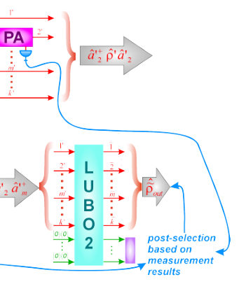
<figcaption class="paper-figure-caption"><b>Fig 1.</b> Figure 1. Schematic block diagram of a possible experimen- tal implementation of polynomial excitations. First, k input modes in Gaussian thermal states are subjected to a linear unitary Bogoliubov transformation (LUBO). To account for dissipative processes, optional vacuum modes can be added at the input and traced out at the output (green lines). Pho- tons can then be added or subtracted (PA/PS) from selected modes, conditioned on the corresponding measurement out- comes. Finally, another Bogoliubov transformation can be performed.</figcaption>
</figure>
<figure class="paper-figure-card">
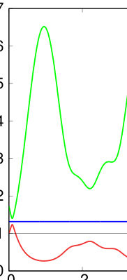
<figcaption class="paper-figure-caption"><b>Fig 2.</b> Figure 3. Symplectic eigenvalues ν∗ i , i = 1, 2, 3 after par- tial transpose at time t as a function of t. Thin black line indicates the value 1.</figcaption>
</figure>
<figure class="paper-figure-card">
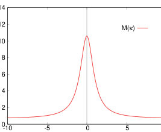
<figcaption class="paper-figure-caption"><b>Fig 3.</b> Figure 4. The Mercer’s quantity M (2.2) as a function of the polynomial parameter κ for the polynomial Gauss- ian density matrix (5.23). Mercer weights ck and posi- tions (xk, yk, zk) are: ck = (k −i)k, (xk, yk, zk) = (1/kk) · (0.1, 0.8, −0.2) (left panel), and ck = (k + i)k, (xk, yk, zk) = (−1/k)k · (0.1, 0.8, −0.2) (right panel). i is the imaginary unit and k = 1, . . . , 10, GKLC parameters are taken as in Eq.(5.4).</figcaption>
</figure>
<figure class="paper-figure-card">

<figcaption class="paper-figure-caption"><b>Fig 4.</b> Figure 5. The Mercer’s quantity M after partial reflec- tion in the third coordinates as a function of the polyno- mial parameter κ for the polynomial Gaussian density ma- trix (5.23). Mercer weights and positions are: ck = (k −i)k, (xk, yk, zk) = (1/kk)(0.1, 0.8, −0.2) (red line) and ck = (k + i)k, (xk, yk, zk) = (−1/k)k(0.1, 0.8, −0.2) (blue line). i is the imaginary unit and k = 1, . . . , 10, GKLC parameters are taken as in Eq. (5.4).</figcaption>
</figure>
<figure class="paper-figure-card">

<figcaption class="paper-figure-caption"><b>Fig 5.</b> Figure 6. Negativity N as a function of the polynomial pa- rameter κ for the polynomial Gaussian density matrix (5.23). Partial reflection was in the third coordinates. GKLC param- eters are taken as in Eq. (5.4).</figcaption>
</figure>
</div>

<p><strong>Summary.</strong> This work develops advanced criteria to quantify entanglement in quantum states that deviate from the simple Gaussian form, using polynomial excitations. By reducing complex infinite-dimensional problems to finite matrix checks, the authors show that entanglement resources are robustly maintained or generated during non-linear quantum operations. This provides a vital theoretical tool for understanding non-Gaussian quantum information processing.</p>
<p><strong>Why it may be interesting.</strong> It provides a powerful, mathematically rigorous framework to quantify and track entanglement resources (NPT) in complex, non-Gaussian quantum systems relevant to quantum optics and quantum information processing.</p>
<details>
<summary>Detailed structure</summary>
<p><strong>Main problem.</strong> The paper aims to characterize quantum entanglement in continuous-variable multipartite systems, specifically extending the analysis beyond the limitations of purely Gaussian entanglement.</p>
<p><strong>Main result.</strong> It proves that polynomial excitations can create NPT entanglement between initially separable subsystems, and it derives analytical expressions for the covariance matrix of general quadratic operators.</p>
<p><strong>Method.</strong> The methodology involves reducing the infinite-dimensional positivity problem to a finite-dimensional one by analyzing the partial transposition of a bilinear representation matrix, utilizing symplectic diagonalization, and spectral decomposition.</p>
<p><strong>Model / system.</strong> The focus is on continuous-variable quantum systems (e.g., optical modes, phonons) whose states are subjected to polynomial excitations acting on an underlying Gaussian state.</p>
<p><strong>Key observables.</strong> NPT entanglement (Negative Partial Transpose), quantum entanglement negativity, and the covariance matrix of quadratic operators.</p>
<p><strong>Important parameters / regimes.</strong> The non-locality of the excitation, tuned by a parameter $\kappa$, and the number of degrees of freedom.</p>
<p><strong>Assumptions / limitations.</strong> The analysis is most tractable for states that can be expressed as polynomial excitations of an initially Gaussian state.</p>
<p><strong>Figures summary.</strong> Figure 1 schematically illustrates the experimental implementation of polynomial excitations involving linear unitary Bogoliubov transformations and non-Gaussian processes like photon addition/subtraction.</p>
<p><strong>Paper structure.</strong> The paper progresses from establishing the general problem of non-Gaussian entanglement, developing the finite-dimensional mathematical criteria for detection, applying these tools to specific quadratic excitations, and concluding with the derivation of closed-form analytical expressions for correlation functions.</p>
</details>
<details>
<summary>Abstract</summary>
<p>Polynomial excitations consisting of creation and annihilation operators are studied. Subsystem entanglement is proven produced and preserved by such manipulations. NPT entanglement already present between any two subsystems of a general pure or mixed multipartite Gaussian state is preserved under all polynomial excitations. Nevertheless, these excitations can create NPT entanglement between initially separable subsystems, implying that the number of NPT entangled pairs cannot decrease. Polynomial excitations of a wide class of initially separable pure states are considered. For these states, the method reduces the infinite-dimensional positivity problem to a finite-dimensional one: after partial transposition, NPT entanglement is equivalent to a corresponding bilinear representation matrix not being positive semi-definite. Furthermore, using symplectic diagonalization and spectral decomposition, an explicit transformation is constructed between the Fock-space and position representations. It is applied to quadratic excitations of a three-mode mixed Gaussian state. The behavior of the NPT entanglement is tracked between subsystems as a function of a parameter $κ$, which tunes the non-locality of the excitation, and quantum negativity is evaluated. Under a chosen quadratic Hamiltonian, the resulting unitary time evolution maintains NPT entanglement for long intervals, interrupted only by short periods of PPT states. Finally, a closed analytical expression is derived for the covariance matrix of a general quadratic operator for an arbitrary number of degrees of freedom in phase space. Our framework directly connects mathematical foundations, theoretical modeling, and experimentally feasible implementations.</p>
</details>
<p><sub><a href="#top">↑ back to top</a></sub></p>

<p><a id="paper-2610.17300"></a></p>
<h3 id="ghost-unitaries-for-loss-resilient-photonic-resource-state-generation"><a href="http://arxiv.org/abs/2610.17300v1">Ghost unitaries for loss-resilient photonic resource-state generation</a></h3>
<p><strong>Authors:</strong> Kevin J. Randles, Manuel H. Muñoz-Arias, Kevin Thompson<br>
<strong>Type:</strong> theory · <strong>Category:</strong> quantum information and computing · <strong>PDF:</strong> <a href="https://arxiv.org/pdf/2610.17300v1">https://arxiv.org/pdf/2610.17300v1</a><br>
<strong>Analysis basis:</strong> full PDF text, analyzed in chunks
<strong>Topic relevance:</strong> <code>correlated / nonlocal dissipation</code> <strong>1/5</strong> · <code>interference shaping light</code> <strong>1/5</strong></p>
<div class="figure-strip-hint">↔ Scroll figures horizontally</div>
<div class="paper-figures-scroll">
<figure class="paper-figure-card">
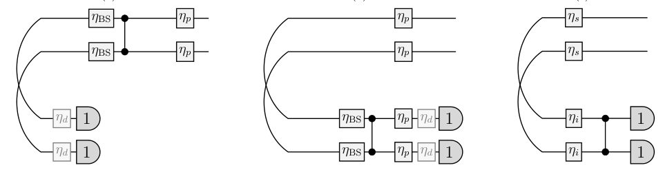
<figcaption class="paper-figure-caption"><b>Fig 1.</b> FIG. 1. HOM-state generation in the (a) direct and (b) ghost implementations. In (a), the lossy beamsplitter acts on the delivered signal modes (top); in (b), the transposed beamsplitter acts on the heralding idler modes (bottom). For equal squeezing, both cases can be mapped onto the unified model in (c), with the implementation dependence captured by the lumped efficiencies ηs and ηi of Eq. (9).</figcaption>
</figure>
<figure class="paper-figure-card">

<figcaption class="paper-figure-caption"><b>Fig 2.</b> FIG. 2. HOM-state generation comparison for equal squeezing. (a) Maximum fidelity max(F(g) HOM, F(d) HOM) and (b) fidelity difference F(g) HOM−F (d) HOM versus squeezing strength |λ|2 and beamsplitter loss rate γBS = 1 −ηBS. Here we fix ηp = 0.99 and ηd = 0.98. The solid line [white in (a), black in (b)] marks F(g) HOM = F (d) HOM; the dotted blue line in (b) is the only-beamsplitter-loss locus of Eq. (25).</figcaption>
</figure>
<figure class="paper-figure-card">

<figcaption class="paper-figure-caption"><b>Fig 3.</b> FIG. 3. HOM fidelity under unequal squeezing. Main panel: Ghost implementation fidelity as a function of the squeezing parameters |λ0,1| with ηp = 0.99, ηd = 0.98, γBS = 0.1, and arg(λ0/λ1) = 0.1. Inset: corresponding direct implementation fidelity using the same scale and axes. Both plots are symmetric under λ0 ↔λ1.</figcaption>
</figure>
<figure class="paper-figure-card">

<figcaption class="paper-figure-caption"><b>Fig 4.</b> FIG. 4. Heralded Bell-state generation using the (a) direct and (b) ghost implementations. The boxed interferometer in (a) is the standard four-photon, eight-mode Bell-state-generation circuit; in the ghost implementation its transpose is applied to the idler modes. The lumped efficiencies η0, · · · η3 (see legend) have implementation-dependent values; see Eq. (28). The representative click patterns ⃗σ = (1100) and ⃗ι = (00001111) are shown.</figcaption>
</figure>
<figure class="paper-figure-card">

<figcaption class="paper-figure-caption"><b>Fig 5.</b> FIG. 5. Bell-state generation comparison for equal squeezing. (a) Maximum fidelity max(F(g) Bell, F(d) Bell) and (b) fidelity difference F(g) Bell −F (d) Bell versus |λ|2 and γBS. We fix ηp = 0.99, ηd = 0.98, and use a hybrid spatial- frequency model with low-loss transverse spatial beam- splitter, ηT = 0.99. The results are qualitatively similar if we take ηT = ηBS. The solid line marks F(g) Bell = F (d) Bell; the dotted blue line in (b) is the corresponding locus in the limit of only frequency-beamsplitter loss.</figcaption>
</figure>
</div>

<p><strong>Summary.</strong> This work introduces 'ghost-unitary' methods to enhance the generation of entangled photonic resource states by engineering how the system responds to unavoidable interferometric loss. By applying the required unitary transformation to the heralding modes rather than the resource modes, the method suppresses false-positive detection events. This offers a crucial pathway for building higher-fidelity quantum computation and communication protocols using photonics.</p>
<p><strong>Why it may be interesting.</strong> It provides a concrete, mathematically derived technique (ghost-unitary implementation) to mitigate the primary experimental hurdle in photonic quantum information—photon loss—by fundamentally changing how the loss affects the state preparation process.</p>
<details>
<summary>Detailed structure</summary>
<p><strong>Main problem.</strong> The paper addresses the challenge of generating high-fidelity entangled photonic resource states (RSG) in the presence of significant interferometric loss.</p>
<p><strong>Main result.</strong> The proposed 'ghost-unitary' implementation, which applies the required unitary transformation to the heralding modes instead of the resource modes, significantly improves the fidelity of generated states compared to direct methods, especially under lossy conditions.</p>
<p><strong>Method.</strong> The core method involves exploiting the transpose identity of multi-mode squeezed vacuum states to redefine the resource generation process, effectively reshaping the detrimental effects of amplitude damping loss.</p>
<p><strong>Model / system.</strong> The system is discrete-variable photonic quantum information processing, utilizing entangled biphoton sources (Multi-Mode Squeezed Vacuum states) to generate states like Bell, NOON, and GHZ states.</p>
<p><strong>Key observables.</strong> Output fidelity ($F$), Success Probability ($p_{succ}$), and the overall Yield ($Y = p 	imes F$) for various resource states.</p>
<p><strong>Important parameters / regimes.</strong> Squeezing strength ($\lambda$), various loss efficiencies ($\eta_{BS}, \eta_d, \eta_e$), and the photon number ($n$).</p>
<p><strong>Assumptions / limitations.</strong> The analysis assumes that the dominant imperfection is interferometric loss and that the ghost-unitary implementation remains well-defined despite general residual non-commuting loss.</p>
<p><strong>Figures summary.</strong> Figures compare the fidelity and yield of direct versus ghost implementations for NOON states and teleportation, showing the parameter regimes where the ghost method outperforms the direct one.</p>
<p><strong>Paper structure.</strong> The paper builds from background theory (MMSV states and the transpose trick) to specific analyses, comparing direct vs. ghost methods for two-photon NOON states, then extending this comparison to Bell state generation and $n$-GHZ state fidelity, and finally simulating Type-I fusion.</p>
</details>
<details>
<summary>Abstract</summary>
<p>Entangled few-photon states, such as Bell and Greenberger-Horne-Zeilinger (GHZ) states, are central resources for discrete-variable photonic quantum information processing. In many architectures, these states are generated probabilistically by first heralding single photons from biphoton sources and then interfering them in linear-optical circuits. In this work, we show that the entanglement structure of said biphoton sources can be directly exploited for noise-engineering to deliver higher quality resource states. Using the transpose identity of multi-mode squeezed vacuum states, we introduce "ghost-unitary" implementations in which the target resource-generation interferometer is applied to the heralding modes rather than to the delivered resource modes. When the dominant imperfection is interferometric loss, this relocation converts direct amplitude damping of the output into false-positive heralding events that require both higher-pair emission and photon loss. In the low-squeezing regime, these events are parametrically suppressed, yielding higher-fidelity conditional resource states. We analyze this mechanism for single-qubit states, two-photon NOON states, Bell states, and a family of $n$-qubit GHZ states, as well as for single-qubit teleportation and type-I-fusion-based resource growth. Across these examples, we delineate finite parameter regimes in which ghost-unitary implementations outperform direct implementations, with particular relevance to frequency-bin photonics where active linear-optical transformations can be relatively lossy. We also prove that, in the setting considered here, the direct implementation of the $n$-GHZ family delivers identically damped outputs: equivalent to the ideal state followed by uniform amplitude damping. This extends the known $n=2,3$ cases and provides a structural result of independent interest for photonic quantum information processing.</p>
</details>
<p><sub><a href="#top">↑ back to top</a></sub></p>

<p><a id="paper-2610.18182"></a></p>
<h3 id="large-deviations-gradient-flows-and-fluctuating-hydrodynamics-for-fractional-diffusion"><a href="http://arxiv.org/abs/2610.18182v1">Large deviations, gradient flows and fluctuating hydrodynamics for fractional diffusion</a></h3>
<p><strong>Authors:</strong> Julien Barre, Hiroshi Horii<br>
<strong>Type:</strong> theory · <strong>Category:</strong> statistical mechanics · <strong>PDF:</strong> <a href="https://arxiv.org/pdf/2610.18182v1">https://arxiv.org/pdf/2610.18182v1</a><br>
<strong>Analysis basis:</strong> full PDF text, analyzed in chunks
<strong>Topic relevance:</strong> <code>Keldysh / 2PI / non-Gaussian methods</code> <strong>1/5</strong> · <code>non-equilibrium universality</code> <strong>1/5</strong></p>
<div class="figure-strip-hint">↔ Scroll figures horizontally</div>
<div class="paper-figures-scroll">
<figure class="paper-figure-card">

<figcaption class="paper-figure-caption"><b>Fig 1.</b> Figure 1: Representative density profiles for the fractional SPDE with additive noise and the particle simulation, for α = 1.0, dt = 0.01, N = 2 × 106, and a spatial grid with 257 points. Panel (a) shows the profile at the first time step t = 0.01, and panel (b) at t = 5.0. The blue solid line denotes the SPDE with additive noise, and the green dashed line denotes the particle simulation. These plots are the basic time evolution of the profile. A histogram with 257 bins represents the particle density.</figcaption>
</figure>
<figure class="paper-figure-card">
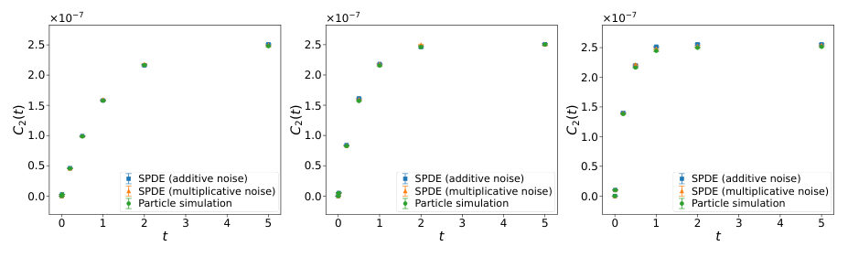
<figcaption class="paper-figure-caption"><b>Fig 2.</b> Figure 2: Time series of the variance C2(t) for φ = sin x (a), φ = sin 2x (b), and φ = sin 4x (c). The horizontal axis shows the physical time t obtained from time steps with dt = 0.01. Markers, with error bars, indicate the models: stars (blue) denote the SPDE with additive noise, triangles (orange) denote the SPDE with multiplicative noise, and circles (green) denote the particle simulation with N = 2 × 106, parameter α = 1.0, and K(1) = 1/2. Symbols are almost superposed and error bars are barely visible.</figcaption>
</figure>
<figure class="paper-figure-card">
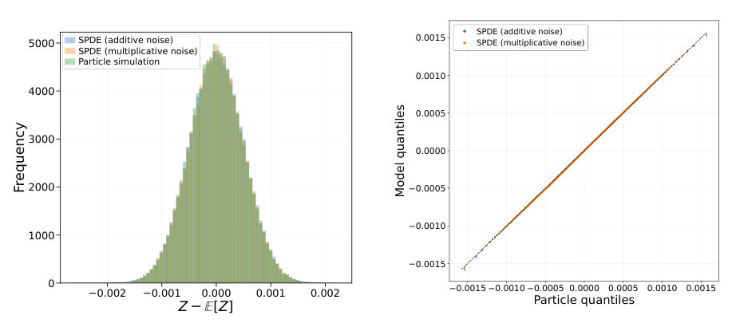
<figcaption class="paper-figure-caption"><b>Fig 3.</b> Figure 3: Distributional comparison for the representative test function φ = sin 2x at the final time step. The plotted quantity is the centered random variable ⟨µ, sin 2x⟩−E[⟨µ, sin 2x⟩]. Panel (a) shows the histogram of ⟨µ, sin 2x⟩, and panel (b) shows the QQ plot. Blue denotes the SPDE with additive noise, orange denotes the SPDE with multiplicative noise, and green denotes the particle simulation with N = 2 × 106, parameter α = 1.0, and K(1) = 1/2.</figcaption>
</figure>
<figure class="paper-figure-card">

<figcaption class="paper-figure-caption"><b>Fig 4.</b> Figure 4: Time series of the variance C2(t) for φ = sin x (a), φ = sin 2x (b), and φ = sin 4x (c) with random initial state. The horizontal axis shows the physical time t obtained from time steps with dt = 0.01. Markers, with error bars, indicate the simulations: stars (blue) denote the SPDE with additive noise, and circles (green) denote the particle simulation with N = 2 × 106, parameter α = 1.0, and K(1) = 1/2. Symbols are almost superposed and error bars are barely visible.</figcaption>
</figure>
<figure class="paper-figure-card">

<figcaption class="paper-figure-caption"><b>Fig 5.</b> Figure 5: Histogram comparison for SPDE model with and without initial fluctuation for the representative test function φ = sin 2x. The plotted quantity is the centered random variable Z −E[Z], with Z = ⟨µ, sin 2x⟩. Panels (a), (b), and (c) correspond to t = 0, t = 0.2, and t = 5.0, respectively. In each panel, blue denotes the case without initial fluctuation and green denotes the case with initial fluctuation.</figcaption>
</figure>
</div>

<p><strong>Summary.</strong> This paper extends the theory of large deviations and gradient flows to systems exhibiting fractional diffusion, modeling particles undergoing Lévy flights. The authors derive the LDP for both independent and interacting particles, leading to a solvable stochastic PDE describing the system's fluctuations. This work provides a powerful mathematical toolset for analyzing anomalous transport in statistical mechanics.</p>
<p><strong>Why it may be interesting.</strong> The rigorous mathematical framework connecting LDPs, gradient flows, and fractional dynamics provides powerful tools for analyzing non-Markovian or anomalous transport phenomena in complex many-body systems, which is relevant to non-equilibrium statistical mechanics.</p>
<details>
<summary>Detailed structure</summary>
<p><strong>Main problem.</strong> To develop a general understanding of large-scale fluctuations for particle systems governed by fractional diffusion, extending concepts from standard Brownian motion.</p>
<p><strong>Main result.</strong> The authors derived the Large Deviation Principle (LDP) for both independent and mean-field interacting Lévy particles, leading to a generalized gradient flow structure and a solvable linear Stochastic PDE for fluctuations.</p>
<p><strong>Method.</strong> The work combines formal derivations of LDPs, the identification of associated Hamiltonians, and the numerical solution of the resulting stochastic Partial Differential Equations (SPDEs).</p>
<p><strong>Model / system.</strong> The system consists of $N$ particles undergoing Lévy flights (stable symmetric Lévy processes) with fractional order $\alpha \in (0, 2]$, which can be treated either independently or with mean-field interactions.</p>
<p><strong>Key observables.</strong> The empirical measure $\mu_N(t)$, the rate function $I[\mu]$, and the fluctuation field $\eta(x, t)$.</p>
<p><strong>Important parameters / regimes.</strong> The fractional diffusion order $\alpha$, the particle density $\mu(x)$, and the system size $N$ (which dictates the speed of the LDP).</p>
<p><strong>Assumptions / limitations.</strong> The derivation of the mean-field Hamiltonian $H_{mf}$ is noted as formal, and the analysis relies on the system exhibiting large-scale universality described by fractional diffusion.</p>
<p><strong>Figures summary.</strong> Not specified in the notes, but the analysis involves deriving and comparing the SPDE solution with direct numerical integration of particle dynamics.</p>
<p><strong>Paper structure.</strong> The paper proceeds by first establishing the LDP for independent particles, then extending this framework to mean-field interactions to derive $H_{mf}$, and finally deriving and solving the corresponding linear SPDE for the fluctuations $\eta$.</p>
</details>
<details>
<summary>Abstract</summary>
<p>This work is a step towards a general understanding of fluctuations for systems of particles described at large scale by fractional diffusion. First, we derive formally a Large Deviation Principle for the empirical measure of mean-field interacting particles with a L{é}vy-type noise. In the case of independent particles, this unveils a generalized gradient flow structure at large scales. Second, we derive and solve numerically a stochastic Partial Differential Equation describing the fluctuating hydrodynamics of this system. The results compare well with direct numerical integration of the particles' dynamics.</p>
</details>
<p><sub><a href="#top">↑ back to top</a></sub></p>

<p><a id="paper-2610.18288"></a></p>
<h3 id="role-of-dissipation-dilution-in-achieving-high-mechanical-quality-factors-in-van-der-waals-resonators"><a href="http://arxiv.org/abs/2610.18288v1">Role of dissipation dilution in achieving high mechanical quality factors in van der Waals resonators</a></h3>
<p><strong>Authors:</strong> Lukas Schleicher, Leonard Geilen, Alexander Musta, Niklas Walter, Anne Rodriguez, Philipp Bredol, Alexander W. Holleitner, Eva M. Weig<br>
<strong>Type:</strong> both · <strong>Category:</strong> other · <strong>PDF:</strong> <a href="https://arxiv.org/pdf/2610.18288v1">https://arxiv.org/pdf/2610.18288v1</a><br>
<strong>Analysis basis:</strong> full PDF text, analyzed in chunks
<strong>Topic relevance:</strong> <code>correlated / nonlocal dissipation</code> <strong>1/5</strong> · <code>driven-dissipative phase transition</code> <strong>1/5</strong></p>
<div class="figure-strip-hint">↔ Scroll figures horizontally</div>
<div class="paper-figures-scroll">
<figure class="paper-figure-card">

<figcaption class="paper-figure-caption"><b>Fig 1.</b> Figure 1: Overview of van der Waals mechanical res- onators in the literature. Quality factor vs. fundamental eigenfrequency for mechanical resonators made of different van der Waals materials, detailed in the legend. Data points measured at room temperature (4 K) are indicated in red (blue). Data points obtained in this work are highlighted in yellow. Gray lines indicating the Q · f product serve as a guide to the eye. See Supplementary Fig. S1 for details of all references.</figcaption>
</figure>
<figure class="paper-figure-card">

<figcaption class="paper-figure-caption"><b>Fig 2.</b> Figure 2: Experimental setup. (a) Optical microscope im- age of Si/SiO2 substrate coated with Ti/Au and transferred MoS2, overlayed with a photoluminescence map indicating the position of suspended, luminescent monolayers (red). Scale- bar corresponds to 25 µm. (b) Interferometric measurement scheme. The suspended drum is driven with a piezo actuator (yellow box) and exposed to a focused infrared laser spot. The drum’s vibration modulates the reflected light, which is de- tected by a photodetector. (c)-(e) Fundamental mechanical mode of a monolayer drum with a radius of 5.5 µm (marked by a white circle in (a)) at 4 K. (c) Mode shape, depicting the maximum amplitude as a function of...</figcaption>
</figure>
<figure class="paper-figure-card">

<figcaption class="paper-figure-caption"><b>Fig 3.</b> Figure 3: Dissipation dilution and drum geometry. Quality factors obtained from ringdown measurements at 4 K in (a) monolayer (0.65 nm, black dots) and (b) multilayer drums (37 layers, 24 nm, black dots) for different drum radii. Each data point is averaged over multiple ringdowns acquired on the same drum. The error bars of the monolayer drums are smaller than the symbol size. The diluted intrinsic Qdil = D·Qint (open circle ) are obtained by subtracting the extrinsic contribution of clamping loss, and error bars of propagated error are shown. Fits of the dissipation dilution model are shown as orange lines. The fits yield an intrinsic quality factor of Qint = 212 for the monolayer and...</figcaption>
</figure>
<figure class="paper-figure-card">

<figcaption class="paper-figure-caption"><b>Fig 4.</b> Figure 4: Temperature dependence of mechanical prop- erties. (a,b) Fundamental eigenfrequency of a monolayer drum with radius of 5.5 µm as a function of temperature and tension, respectively. The tension is obtained from the measured eigenfrequency using Eq. 7. (c,d) Quality factor extracted from the linear response of the drum as a function of temperature and tension, respectively. (e,f) Damping rate as a function of temperature and tension, respectively. The color of the datapoints represents temperature from room temperature (red) down to 4 K (blue).</figcaption>
</figure>
<figure class="paper-figure-card">
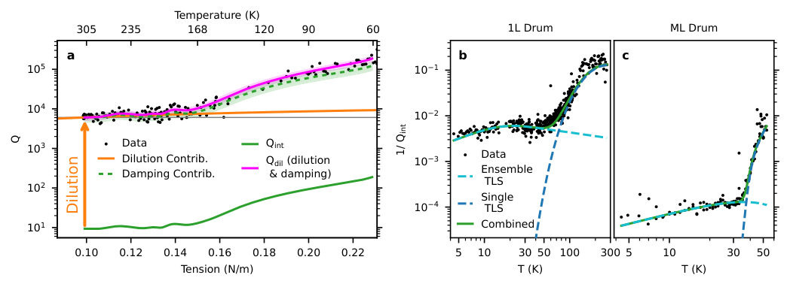
<figcaption class="paper-figure-caption"><b>Fig 5.</b> Figure 5: Influence of temperature on dissipation dilution and on damping. (a) Quality factor of a monolayer drum with 5.5 µm radius as a function of temperature-induced tension (black dots). The orange solid and green dashed lines depict the contribution of the temperature-dependent dilution factor and damping rate to the quality factor, starting from the room-temperature quality factor as the baseline. The orange arrow visualizes the dilution factor at room temperature. The green solid line shows the intrinsic quality factor. The pink line combines both contributions, yielding excellent agreement with the measured data. Shaded regions indicate error corridors. (b,c) Inverse intrinsic...</figcaption>
</figure>
</div>

<p><strong>Summary.</strong> This paper reports record-high mechanical quality factors in atomically thin $ ext{MoS}_2$ resonators, attributing the enhancement to a mechanism called 'dissipation dilution.' By combining advanced measurements with theoretical modeling, the authors establish that this dilution effect allows sub-nanometer vdW materials to function as platforms for ultrahigh-Q quantum sensing.</p>
<p><strong>Why it may be interesting.</strong> The work directly addresses energy dissipation in nanoscale mechanical systems, which is crucial for coupling mechanical motion to quantum states (quantum transduction) and understanding open quantum systems dynamics.</p>
<details>
<summary>Detailed structure</summary>
<p><strong>Main problem.</strong> The study aims to quantify the role of 'dissipation dilution' in achieving record-high mechanical quality factors (Q) in atomically thin van der Waals (vdW) resonators.</p>
<p><strong>Main result.</strong> Record Q factors up to $372,000$ were achieved in monolayer $    ext{MoS}_2$ drums, establishing dissipation dilution as the governing mechanism for ultrahigh-Q mechanical response in vdW materials.</p>
<p><strong>Method.</strong> The researchers combined experimental measurements of mechanical resonance (ringdown) with theoretical modeling based on elastic theory to analyze energy dissipation mechanisms.</p>
<p><strong>Model / system.</strong> The physical system is suspended, circular drums made of 2D vdW materials like $    ext{MoS}_2$. The model analyzes the quality factor ($Q$) by decomposing it into intrinsic and dilution components, using specialized elastic theory for axisymmetric mode shapes.</p>
<p><strong>Key observables.</strong> Quality factor ($Q$), fundamental resonance frequency ($f_0$), and the dilution factor ($D$).</p>
<p><strong>Important parameters / regimes.</strong> Temperature (4 K), material thickness (monolayer vs. multilayer), and the degree of tensile stress/tension ($\sigma_{2D}$).</p>
<p><strong>Assumptions / limitations.</strong> The intrinsic quality factor of monolayers is assumed to be limited by surface losses, while the dilution factor is modeled based on stored elastic energy contributions.</p>
<p><strong>Figures summary.</strong> Figure 1 compares Q vs. frequency for various vdW materials; Figure 2 details the experimental setup and ringdown measurements for a monolayer drum, yielding a high Q value.</p>
<p><strong>Paper structure.</strong> The paper introduces the problem, develops a theoretical model for dissipation dilution in circular drums, presents experimental measurements on $ ext{MoS}_2$ monolayers and multilayers, analyzes the thickness dependence of $Q$, and concludes by establishing the mechanism's importance for quantum transduction.</p>
</details>
<details>
<summary>Abstract</summary>
<p>Dissipation dilution has driven a revolution in the quality factors ($Q$) of top-down nanomechanical resonators. Yet it has not been leveraged for van der Waals (vdW) materials. Here we report quality factors up to $372{,}000\pm37{,}000$ in monolayer MoS$_2$ drums at 4 K, nearly an order of magnitude beyond the previous best for any vdW material at this temperature, enabled by a clean, polymer-free exfoliation technique. We develop a dissipation-dilution model for circular drums and analyze the contributing intrinsic and extrinsic dissipation mechanisms. The MoS$_2$ monolayer exhibits a dilution factor of order $1,000$, establishing sub-nanometer-thin resonators as ultimate dilution materials. The intrinsic quality factor, however, is limited by surface losses at atomic thickness. Conversely, multilayer drums show a lower dilution factor but a high intrinsic quality factor, on par with established top-down materials of similar dimensions, both resulting from the increased thickness. A two-level-system analysis of the temperature-dependent damping confirms this bulk-versus-surface picture and provides first insight into its microscopic origin. Our results identify dissipation dilution as the governing mechanism for high-$Q$ mechanical vdW resonators. Combined with strategies such as soft clamping or stress engineering, they establish atomically thin resonators as a platform for ultrahigh-$Q$ quantum transduction and sensing.</p>
</details>
<p><sub><a href="#top">↑ back to top</a></sub></p>
<hr>
<p>
<a href="index.html">← Index</a>
 · <a href="papers_03.html">← Previous</a> · <a href="papers_05.html">Next →</a>
</p>
<hr>

</body>
</html>
